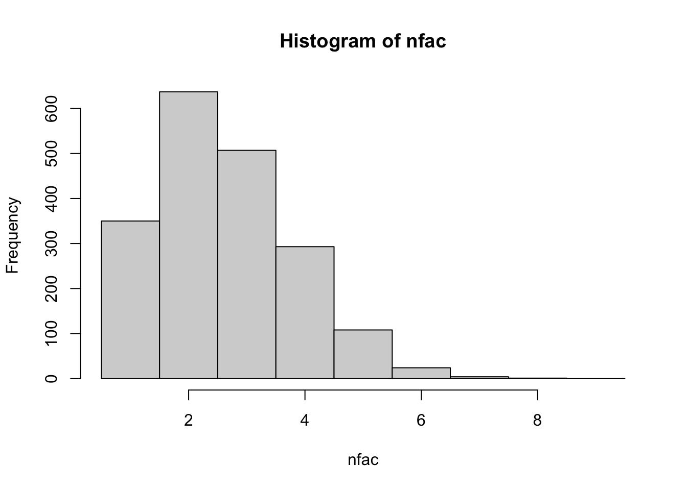

flashier_sla_text
Matthew Stephens
2023-10-17
Last updated: 2023-11-06
Checks: 7 0
Knit directory: misc/analysis/
This reproducible R Markdown analysis was created with workflowr (version 1.7.0). The Checks tab describes the reproducibility checks that were applied when the results were created. The Past versions tab lists the development history.
Great! Since the R Markdown file has been committed to the Git repository, you know the exact version of the code that produced these results.
Great job! The global environment was empty. Objects defined in the global environment can affect the analysis in your R Markdown file in unknown ways. For reproduciblity it’s best to always run the code in an empty environment.
The command set.seed(1) was run prior to running the
code in the R Markdown file. Setting a seed ensures that any results
that rely on randomness, e.g. subsampling or permutations, are
reproducible.
Great job! Recording the operating system, R version, and package versions is critical for reproducibility.
Nice! There were no cached chunks for this analysis, so you can be confident that you successfully produced the results during this run.
Great job! Using relative paths to the files within your workflowr project makes it easier to run your code on other machines.
Great! You are using Git for version control. Tracking code development and connecting the code version to the results is critical for reproducibility.
The results in this page were generated with repository version 8eb7462. See the Past versions tab to see a history of the changes made to the R Markdown and HTML files.
Note that you need to be careful to ensure that all relevant files for
the analysis have been committed to Git prior to generating the results
(you can use wflow_publish or
wflow_git_commit). workflowr only checks the R Markdown
file, but you know if there are other scripts or data files that it
depends on. Below is the status of the Git repository when the results
were generated:
Ignored files:
Ignored: .DS_Store
Ignored: .Rhistory
Ignored: .Rproj.user/
Ignored: analysis/.RData
Ignored: analysis/.Rhistory
Ignored: analysis/ALStruct_cache/
Ignored: analysis/figure/
Ignored: data/.Rhistory
Ignored: data/methylation-data-for-matthew.rds
Ignored: data/pbmc/
Untracked files:
Untracked: .dropbox
Untracked: Icon
Untracked: analysis/GHstan.Rmd
Untracked: analysis/GTEX-cogaps.Rmd
Untracked: analysis/PACS.Rmd
Untracked: analysis/Rplot.png
Untracked: analysis/SPCAvRP.rmd
Untracked: analysis/admm_02.Rmd
Untracked: analysis/admm_03.Rmd
Untracked: analysis/cholesky.Rmd
Untracked: analysis/compare-transformed-models.Rmd
Untracked: analysis/cormotif.Rmd
Untracked: analysis/cp_ash.Rmd
Untracked: analysis/eQTL.perm.rand.pdf
Untracked: analysis/eb_prepilot.Rmd
Untracked: analysis/eb_var.Rmd
Untracked: analysis/ebpmf1.Rmd
Untracked: analysis/ebpmf_sla_text.Rmd
Untracked: analysis/ebspca_sims.Rmd
Untracked: analysis/explore_psvd.Rmd
Untracked: analysis/fa_check_identify.Rmd
Untracked: analysis/fa_iterative.Rmd
Untracked: analysis/flash_test_tree.Rmd
Untracked: analysis/flash_tree.Rmd
Untracked: analysis/flashier_newgroups.Rmd
Untracked: analysis/greedy_ebpmf_exploration_00.Rmd
Untracked: analysis/ieQTL.perm.rand.pdf
Untracked: analysis/lasso_em_03.Rmd
Untracked: analysis/m6amash.Rmd
Untracked: analysis/mash_bhat_z.Rmd
Untracked: analysis/mash_ieqtl_permutations.Rmd
Untracked: analysis/methylation_example.Rmd
Untracked: analysis/mixsqp.Rmd
Untracked: analysis/mr.ash_lasso_init.Rmd
Untracked: analysis/mr.mash.test.Rmd
Untracked: analysis/mr_ash_modular.Rmd
Untracked: analysis/mr_ash_parameterization.Rmd
Untracked: analysis/mr_ash_ridge.Rmd
Untracked: analysis/mv_gaussian_message_passing.Rmd
Untracked: analysis/nejm.Rmd
Untracked: analysis/nmf_bg.Rmd
Untracked: analysis/normal_conditional_on_r2.Rmd
Untracked: analysis/normalize.Rmd
Untracked: analysis/pbmc.Rmd
Untracked: analysis/pca_binary_weighted.Rmd
Untracked: analysis/pca_l1.Rmd
Untracked: analysis/poisson_nmf_approx.Rmd
Untracked: analysis/poisson_shrink.Rmd
Untracked: analysis/poisson_transform.Rmd
Untracked: analysis/pseudodata.Rmd
Untracked: analysis/qrnotes.txt
Untracked: analysis/ridge_iterative_02.Rmd
Untracked: analysis/ridge_iterative_splitting.Rmd
Untracked: analysis/samps/
Untracked: analysis/sc_bimodal.Rmd
Untracked: analysis/shrinkage_comparisons_changepoints.Rmd
Untracked: analysis/susie_en.Rmd
Untracked: analysis/susie_z_investigate.Rmd
Untracked: analysis/svd-timing.Rmd
Untracked: analysis/temp.RDS
Untracked: analysis/temp.Rmd
Untracked: analysis/test-figure/
Untracked: analysis/test.Rmd
Untracked: analysis/test.Rpres
Untracked: analysis/test.md
Untracked: analysis/test_qr.R
Untracked: analysis/test_sparse.Rmd
Untracked: analysis/tree_dist_top_eigenvector.Rmd
Untracked: analysis/z.txt
Untracked: code/multivariate_testfuncs.R
Untracked: code/rqb.hacked.R
Untracked: data/4matthew/
Untracked: data/4matthew2/
Untracked: data/E-MTAB-2805.processed.1/
Untracked: data/ENSG00000156738.Sim_Y2.RDS
Untracked: data/GDS5363_full.soft.gz
Untracked: data/GSE41265_allGenesTPM.txt
Untracked: data/Muscle_Skeletal.ACTN3.pm1Mb.RDS
Untracked: data/Thyroid.FMO2.pm1Mb.RDS
Untracked: data/bmass.HaemgenRBC2016.MAF01.Vs2.MergedDataSources.200kRanSubset.ChrBPMAFMarkerZScores.vs1.txt.gz
Untracked: data/bmass.HaemgenRBC2016.Vs2.NewSNPs.ZScores.hclust.vs1.txt
Untracked: data/bmass.HaemgenRBC2016.Vs2.PreviousSNPs.ZScores.hclust.vs1.txt
Untracked: data/eb_prepilot/
Untracked: data/finemap_data/fmo2.sim/b.txt
Untracked: data/finemap_data/fmo2.sim/dap_out.txt
Untracked: data/finemap_data/fmo2.sim/dap_out2.txt
Untracked: data/finemap_data/fmo2.sim/dap_out2_snp.txt
Untracked: data/finemap_data/fmo2.sim/dap_out_snp.txt
Untracked: data/finemap_data/fmo2.sim/data
Untracked: data/finemap_data/fmo2.sim/fmo2.sim.config
Untracked: data/finemap_data/fmo2.sim/fmo2.sim.k
Untracked: data/finemap_data/fmo2.sim/fmo2.sim.k4.config
Untracked: data/finemap_data/fmo2.sim/fmo2.sim.k4.snp
Untracked: data/finemap_data/fmo2.sim/fmo2.sim.ld
Untracked: data/finemap_data/fmo2.sim/fmo2.sim.snp
Untracked: data/finemap_data/fmo2.sim/fmo2.sim.z
Untracked: data/finemap_data/fmo2.sim/pos.txt
Untracked: data/logm.csv
Untracked: data/m.cd.RDS
Untracked: data/m.cdu.old.RDS
Untracked: data/m.new.cd.RDS
Untracked: data/m.old.cd.RDS
Untracked: data/mainbib.bib.old
Untracked: data/mat.csv
Untracked: data/mat.txt
Untracked: data/mat_new.csv
Untracked: data/matrix_lik.rds
Untracked: data/paintor_data/
Untracked: data/running_data_chris.csv
Untracked: data/running_data_matthew.csv
Untracked: data/temp.txt
Untracked: data/y.txt
Untracked: data/y_f.txt
Untracked: data/zscore_jointLCLs_m6AQTLs_susie_eQTLpruned.rds
Untracked: data/zscore_jointLCLs_random.rds
Untracked: explore_udi.R
Untracked: output/fit.k10.rds
Untracked: output/fit.varbvs.RDS
Untracked: output/glmnet.fit.RDS
Untracked: output/test.bv.txt
Untracked: output/test.gamma.txt
Untracked: output/test.hyp.txt
Untracked: output/test.log.txt
Untracked: output/test.param.txt
Untracked: output/test2.bv.txt
Untracked: output/test2.gamma.txt
Untracked: output/test2.hyp.txt
Untracked: output/test2.log.txt
Untracked: output/test2.param.txt
Untracked: output/test3.bv.txt
Untracked: output/test3.gamma.txt
Untracked: output/test3.hyp.txt
Untracked: output/test3.log.txt
Untracked: output/test3.param.txt
Untracked: output/test4.bv.txt
Untracked: output/test4.gamma.txt
Untracked: output/test4.hyp.txt
Untracked: output/test4.log.txt
Untracked: output/test4.param.txt
Untracked: output/test5.bv.txt
Untracked: output/test5.gamma.txt
Untracked: output/test5.hyp.txt
Untracked: output/test5.log.txt
Untracked: output/test5.param.txt
Unstaged changes:
Modified: .gitignore
Modified: analysis/flashier_log1p.Rmd
Modified: analysis/mr_ash_pen.Rmd
Modified: analysis/susie_flash.Rmd
Note that any generated files, e.g. HTML, png, CSS, etc., are not included in this status report because it is ok for generated content to have uncommitted changes.
These are the previous versions of the repository in which changes were
made to the R Markdown (analysis/flashier_sla_text.Rmd) and
HTML (docs/flashier_sla_text.html) files. If you’ve
configured a remote Git repository (see ?wflow_git_remote),
click on the hyperlinks in the table below to view the files as they
were in that past version.
| File | Version | Author | Date | Message |
|---|---|---|---|---|
| Rmd | 8eb7462 | Matthew Stephens | 2023-11-06 | workflowr::wflow_publish("flashier_sla_text.Rmd") |
| html | 68ddffa | Matthew Stephens | 2023-10-20 | Build site. |
| Rmd | 597ecff | Matthew Stephens | 2023-10-20 | workflowr::wflow_publish("flashier_sla_text.Rmd") |
Introduction
I want to try running flashier (non-negative) on some text data and see what happens. It is also a chance to try out the flashier release to CRAN.
I tried running flashier on both the log1p transformed counts directly, and log1p transform of fitted values from a topic model. Both produce somewhat promising results. It is hard to beat the log1p transform for simplicity and speed.
library(Matrix)
library(readr)
library(tm)Loading required package: NLPlibrary(fastTopics)
library(flashier)Loading required package: ebnmLoading required package: magrittrLoading required package: ggplot2
Attaching package: 'ggplot2'The following object is masked from 'package:NLP':
annotatelibrary(ebpmf)
library(RcppML)RcppML v0.5.5 using 'options(RcppML.threads = 0)' (all available threads), 'options(RcppML.verbose = FALSE)'sla <- read_csv("../../gsmash/data/SLA/SCC2016/Data/paperList.txt")Rows: 3248 Columns: 5── Column specification ────────────────────────────────────────────────────────
Delimiter: ","
chr (3): DOI, title, abstract
dbl (2): year, citCounts
ℹ Use `spec()` to retrieve the full column specification for this data.
ℹ Specify the column types or set `show_col_types = FALSE` to quiet this message.sla <- sla[!is.na(sla$abstract),]
sla$docnum = 1:nrow(sla)
datax = readRDS('../../gsmash/data/sla_full.rds')
dim(datax$data)[1] 3207 10104sum(datax$data==0)/prod(dim(datax$data))[1] 0.9948157datax$data = Matrix(datax$data,sparse = TRUE)Data filtering
filter out some documents: use top 60% longest ones as in Ke and Wang 2022.
doc_to_use = order(rowSums(datax$data),decreasing = T)[1:round(nrow(datax$data)*0.6)]
mat = datax$data[doc_to_use,]
sla = sla[doc_to_use,]
samples = datax$samples
samples = lapply(samples, function(z){z[doc_to_use]})Filter out words that appear in less than 5 documents. Note: if you don’t do this you can still get real factors that capture very rare words co-occuring. Eg two authors that are cited together. If you are interested in those factors, no need to filter…
word_to_use = which(colSums(mat>0)>4)
mat = mat[,word_to_use]
mat = Matrix(mat,sparse=TRUE)I tried both the log1p transform both with and without normalizing by the size factor, based on size of document. I also tried \(log(10x+1)\), which is equivalent to \(log(x+0.1)\) (pseudocount of 0.1).
docsize = rowSums(mat)
lmat = Matrix(log(mat+1),sparse=TRUE)
c = docsize/mean(docsize)
lmat_c = Matrix(log(mat/c+1),sparse=TRUE)
lmat_c_01 = Matrix(log(10*mat/c+1),sparse=TRUE)Fit log1p transformed data
I fit with a little stabilization (S=0.01 or S=0.05) to avoid tau blowing up. tau gets very big when a factor picks out a single word, so this tends to reduce single-word factors that capture a single word. (But, interestingly, with var_type=0 you also get a lot of single word factors, perhaps for a different reason?)
set.seed(1)
fit.nn = flash(lmat,ebnm_fn = c(ebnm::ebnm_point_exponential,ebnm::ebnm_point_exponential),var_type=2,greedy_Kmax = 200, S=0.01)Adding factor 1 to flash object...
Adding factor 2 to flash object...
Adding factor 3 to flash object...
Adding factor 4 to flash object...
Adding factor 5 to flash object...
Adding factor 6 to flash object...
Adding factor 7 to flash object...
Adding factor 8 to flash object...
Adding factor 9 to flash object...
Adding factor 10 to flash object...
Adding factor 11 to flash object...
Adding factor 12 to flash object...
Adding factor 13 to flash object...
Adding factor 14 to flash object...
Adding factor 15 to flash object...
Adding factor 16 to flash object...
Adding factor 17 to flash object...
Adding factor 18 to flash object...
Adding factor 19 to flash object...
Adding factor 20 to flash object...
Adding factor 21 to flash object...
Adding factor 22 to flash object...
Adding factor 23 to flash object...
Adding factor 24 to flash object...
Adding factor 25 to flash object...
Adding factor 26 to flash object...
Adding factor 27 to flash object...
Adding factor 28 to flash object...
Adding factor 29 to flash object...
Adding factor 30 to flash object...
Adding factor 31 to flash object...
Adding factor 32 to flash object...
Adding factor 33 to flash object...
Adding factor 34 to flash object...
Adding factor 35 to flash object...
Adding factor 36 to flash object...
Adding factor 37 to flash object...
Adding factor 38 to flash object...
Adding factor 39 to flash object...
Adding factor 40 to flash object...
Adding factor 41 to flash object...
Adding factor 42 to flash object...
Adding factor 43 to flash object...
Adding factor 44 to flash object...
Adding factor 45 to flash object...
Adding factor 46 to flash object...
Adding factor 47 to flash object...
Adding factor 48 to flash object...
Adding factor 49 to flash object...
Adding factor 50 to flash object...
Adding factor 51 to flash object...
Adding factor 52 to flash object...
Adding factor 53 to flash object...
Adding factor 54 to flash object...
Adding factor 55 to flash object...
Adding factor 56 to flash object...
Adding factor 57 to flash object...
Adding factor 58 to flash object...
Adding factor 59 to flash object...
Adding factor 60 to flash object...
Adding factor 61 to flash object...
Adding factor 62 to flash object...
Adding factor 63 to flash object...
Adding factor 64 to flash object...
Adding factor 65 to flash object...
Adding factor 66 to flash object...
Adding factor 67 to flash object...
Adding factor 68 to flash object...
Adding factor 69 to flash object...
Adding factor 70 to flash object...
Adding factor 71 to flash object...
Factor doesn't significantly increase objective and won't be added.
Wrapping up...
Done.
Nullchecking 70 factors...
Done.fit.nn.c = flash(lmat_c,ebnm_fn = c(ebnm::ebnm_point_exponential,ebnm::ebnm_point_exponential),var_type=2,greedy_Kmax = 200, S=0.01)Adding factor 1 to flash object...
Adding factor 2 to flash object...
Adding factor 3 to flash object...
Adding factor 4 to flash object...
Adding factor 5 to flash object...
Adding factor 6 to flash object...
Adding factor 7 to flash object...
Adding factor 8 to flash object...
Adding factor 9 to flash object...
Adding factor 10 to flash object...
Adding factor 11 to flash object...
Adding factor 12 to flash object...
Adding factor 13 to flash object...
Adding factor 14 to flash object...
Adding factor 15 to flash object...
Adding factor 16 to flash object...
Adding factor 17 to flash object...
Adding factor 18 to flash object...
Adding factor 19 to flash object...
Adding factor 20 to flash object...
Adding factor 21 to flash object...
Adding factor 22 to flash object...
Adding factor 23 to flash object...
Adding factor 24 to flash object...
Adding factor 25 to flash object...
Adding factor 26 to flash object...
Adding factor 27 to flash object...
Adding factor 28 to flash object...
Adding factor 29 to flash object...
Adding factor 30 to flash object...
Adding factor 31 to flash object...
Adding factor 32 to flash object...
Adding factor 33 to flash object...
Adding factor 34 to flash object...
Adding factor 35 to flash object...
Adding factor 36 to flash object...
Adding factor 37 to flash object...
Adding factor 38 to flash object...
Adding factor 39 to flash object...
Adding factor 40 to flash object...
Adding factor 41 to flash object...
Adding factor 42 to flash object...
Adding factor 43 to flash object...
Adding factor 44 to flash object...
Adding factor 45 to flash object...
Adding factor 46 to flash object...
Adding factor 47 to flash object...
Adding factor 48 to flash object...
Adding factor 49 to flash object...
Adding factor 50 to flash object...
Adding factor 51 to flash object...
Adding factor 52 to flash object...
Adding factor 53 to flash object...
Adding factor 54 to flash object...
Adding factor 55 to flash object...
Adding factor 56 to flash object...
Adding factor 57 to flash object...
Adding factor 58 to flash object...
Adding factor 59 to flash object...
Adding factor 60 to flash object...
Adding factor 61 to flash object...
Adding factor 62 to flash object...
Factor doesn't significantly increase objective and won't be added.
Wrapping up...
Done.
Nullchecking 61 factors...
Done.fit.nn.c.01 = flash(lmat_c_01,ebnm_fn = c(ebnm::ebnm_point_exponential,ebnm::ebnm_point_exponential),var_type=2,greedy_Kmax = 200, S=0.01)Adding factor 1 to flash object...
Adding factor 2 to flash object...
Adding factor 3 to flash object...
Adding factor 4 to flash object...
Adding factor 5 to flash object...
Adding factor 6 to flash object...
Adding factor 7 to flash object...
Adding factor 8 to flash object...
Adding factor 9 to flash object...
Adding factor 10 to flash object...
Adding factor 11 to flash object...
Adding factor 12 to flash object...
Adding factor 13 to flash object...
Adding factor 14 to flash object...
Adding factor 15 to flash object...
Adding factor 16 to flash object...
Adding factor 17 to flash object...
Adding factor 18 to flash object...
Adding factor 19 to flash object...
Adding factor 20 to flash object...
Adding factor 21 to flash object...
Adding factor 22 to flash object...
Adding factor 23 to flash object...
Adding factor 24 to flash object...
Adding factor 25 to flash object...
Adding factor 26 to flash object...
Adding factor 27 to flash object...
Adding factor 28 to flash object...
Adding factor 29 to flash object...
Adding factor 30 to flash object...
Adding factor 31 to flash object...
Adding factor 32 to flash object...
Adding factor 33 to flash object...
Adding factor 34 to flash object...
Adding factor 35 to flash object...
Adding factor 36 to flash object...
Adding factor 37 to flash object...
Adding factor 38 to flash object...
Adding factor 39 to flash object...
Adding factor 40 to flash object...
Adding factor 41 to flash object...
Adding factor 42 to flash object...
Adding factor 43 to flash object...
Adding factor 44 to flash object...
Adding factor 45 to flash object...
Adding factor 46 to flash object...
Adding factor 47 to flash object...
Adding factor 48 to flash object...
Adding factor 49 to flash object...
Adding factor 50 to flash object...
Adding factor 51 to flash object...
Adding factor 52 to flash object...
Adding factor 53 to flash object...
Adding factor 54 to flash object...
Adding factor 55 to flash object...
Adding factor 56 to flash object...
Adding factor 57 to flash object...
Adding factor 58 to flash object...
Adding factor 59 to flash object...
Adding factor 60 to flash object...
Adding factor 61 to flash object...
Adding factor 62 to flash object...
Adding factor 63 to flash object...
Adding factor 64 to flash object...
Adding factor 65 to flash object...
Adding factor 66 to flash object...
Adding factor 67 to flash object...
Adding factor 68 to flash object...
Adding factor 69 to flash object...
Adding factor 70 to flash object...
Adding factor 71 to flash object...
Adding factor 72 to flash object...
Adding factor 73 to flash object...
Adding factor 74 to flash object...
Adding factor 75 to flash object...
Adding factor 76 to flash object...
Adding factor 77 to flash object...
Adding factor 78 to flash object...
Adding factor 79 to flash object...
Adding factor 80 to flash object...
Adding factor 81 to flash object...
Adding factor 82 to flash object...
Adding factor 83 to flash object...
Adding factor 84 to flash object...
Adding factor 85 to flash object...
Adding factor 86 to flash object...
Adding factor 87 to flash object...
Adding factor 88 to flash object...
Adding factor 89 to flash object...
Adding factor 90 to flash object...
Adding factor 91 to flash object...
Adding factor 92 to flash object...
Adding factor 93 to flash object...
Adding factor 94 to flash object...
Adding factor 95 to flash object...
Adding factor 96 to flash object...
Adding factor 97 to flash object...
Adding factor 98 to flash object...
Adding factor 99 to flash object...
Adding factor 100 to flash object...
Adding factor 101 to flash object...
Adding factor 102 to flash object...
Adding factor 103 to flash object...
Adding factor 104 to flash object...
Adding factor 105 to flash object...
Adding factor 106 to flash object...
Adding factor 107 to flash object...
Adding factor 108 to flash object...
Adding factor 109 to flash object...
Adding factor 110 to flash object...
Adding factor 111 to flash object...
Adding factor 112 to flash object...
Adding factor 113 to flash object...
Adding factor 114 to flash object...
Adding factor 115 to flash object...
Adding factor 116 to flash object...
Adding factor 117 to flash object...
Adding factor 118 to flash object...
Adding factor 119 to flash object...
Factor doesn't significantly increase objective and won't be added.
Wrapping up...
Done.
Nullchecking 118 factors...
Factor1set to zero, increasing objective by 4.017e+04.
Wrapping up...
Removed one factor.
Done.fit.nn.c.01.2 = flash(lmat_c_01,ebnm_fn = c(ebnm::ebnm_point_exponential,ebnm::ebnm_point_exponential),var_type=2,greedy_Kmax = 200, S=0.05)Adding factor 1 to flash object...
Adding factor 2 to flash object...
Adding factor 3 to flash object...
Adding factor 4 to flash object...
Adding factor 5 to flash object...
Adding factor 6 to flash object...
Adding factor 7 to flash object...
Adding factor 8 to flash object...
Adding factor 9 to flash object...
Adding factor 10 to flash object...
Adding factor 11 to flash object...
Adding factor 12 to flash object...
Adding factor 13 to flash object...
Adding factor 14 to flash object...
Adding factor 15 to flash object...
Adding factor 16 to flash object...
Adding factor 17 to flash object...
Adding factor 18 to flash object...
Adding factor 19 to flash object...
Adding factor 20 to flash object...
Adding factor 21 to flash object...
Adding factor 22 to flash object...
Adding factor 23 to flash object...
Adding factor 24 to flash object...
Adding factor 25 to flash object...
Adding factor 26 to flash object...
Adding factor 27 to flash object...
Adding factor 28 to flash object...
Adding factor 29 to flash object...
Adding factor 30 to flash object...
Adding factor 31 to flash object...
Adding factor 32 to flash object...
Adding factor 33 to flash object...
Adding factor 34 to flash object...
Adding factor 35 to flash object...
Adding factor 36 to flash object...
Adding factor 37 to flash object...
Adding factor 38 to flash object...
Adding factor 39 to flash object...
Adding factor 40 to flash object...
Adding factor 41 to flash object...
Adding factor 42 to flash object...
Adding factor 43 to flash object...
Adding factor 44 to flash object...
Adding factor 45 to flash object...
Adding factor 46 to flash object...
Adding factor 47 to flash object...
Adding factor 48 to flash object...
Adding factor 49 to flash object...
Adding factor 50 to flash object...
Adding factor 51 to flash object...
Adding factor 52 to flash object...
Adding factor 53 to flash object...
Adding factor 54 to flash object...
Adding factor 55 to flash object...
Adding factor 56 to flash object...
Adding factor 57 to flash object...
Adding factor 58 to flash object...
Adding factor 59 to flash object...
Adding factor 60 to flash object...
Adding factor 61 to flash object...
Adding factor 62 to flash object...
Adding factor 63 to flash object...
Adding factor 64 to flash object...
Adding factor 65 to flash object...
Adding factor 66 to flash object...
Adding factor 67 to flash object...
Adding factor 68 to flash object...
Adding factor 69 to flash object...
Adding factor 70 to flash object...
Adding factor 71 to flash object...
Adding factor 72 to flash object...
Adding factor 73 to flash object...
Adding factor 74 to flash object...
Adding factor 75 to flash object...
Adding factor 76 to flash object...
Adding factor 77 to flash object...
Adding factor 78 to flash object...
Adding factor 79 to flash object...
Adding factor 80 to flash object...
Adding factor 81 to flash object...
Adding factor 82 to flash object...
Adding factor 83 to flash object...
Adding factor 84 to flash object...
Adding factor 85 to flash object...
Adding factor 86 to flash object...
Adding factor 87 to flash object...
Adding factor 88 to flash object...
Adding factor 89 to flash object...
Adding factor 90 to flash object...
Adding factor 91 to flash object...
Adding factor 92 to flash object...
Adding factor 93 to flash object...
Adding factor 94 to flash object...
Adding factor 95 to flash object...
Adding factor 96 to flash object...
Factor doesn't significantly increase objective and won't be added.
Wrapping up...
Done.
Nullchecking 95 factors...
Done.fit.nn.ml = nmf(lmat,k = 100)
fit.nn.ml.c = nmf(lmat_c, k=100)Look at the keywords for each factor. There are many single-word factors, and not as many additional factors as I would have expected.
get_keywords = function(fit,thresh = 2){
if("flash" %in% class(fit)){
LL <- fit$L_pm
FF = fit$F_pm
}
if("nmf" %in% class(fit)){ # deals with RcppML::nmf fit
LL = fit@w
FF = t(fit@d*fit@h)
}
rownames(LL)<-1:nrow(LL)
Lnorm = t(t(LL)/apply(LL,2,max))
Fnorm = t(t(FF)*apply(LL,2,max))
khat = apply(Lnorm,1,which.max)
Lmax = apply(Lnorm,1,max)
khat[Lmax<0.1] = 0
keyw.nn =list()
for(k in 1:ncol(Fnorm)){
key = Fnorm[,k]>log(thresh)
keyw.nn[[k]] = (colnames(mat)[key])[order(Fnorm[key,k],decreasing = T)]
}
return(keyw.nn)
}
print(get_keywords(fit.nn))[[1]]
[1] "model" "estim" "data" "method" "propos" "studi"
[7] "function" "distribut" "sampl" "simul"
[[2]]
[1] "fals" "control" "procedur" "test" "reject" "hypothes"
[7] "rate" "discoveri" "null" "multipl" "pvalu" "fdr"
[13] "kfwer" "stepdown" "number" "fwer" "familywis" "hochberg"
[19] "error" "depend" "alpha" "statist"
[[3]]
[1] "cancer" "diseas" "studi"
[[4]]
[1] "rightcensor" "surviv" "semiparametr" "nonparametr" "failur"
[6] "time"
[[5]]
[1] "simex" "measur" "error"
[[6]]
[1] "wilk" "test" "ratio"
[[7]]
[1] "semiparametr" "estim" "model"
[[8]]
[1] "test" "null" "hypothesi"
[[9]]
[1] "select" "lasso" "spars" "penalti" "penal" "variabl" "oracl"
[[10]]
[1] "equivari" "depth" "scatter" "affin" "introduc"
[[11]]
[1] "memori"
[[12]]
[1] "bandwidth" "kernel" "local" "select"
[[13]]
[1] "nconsist"
[[14]]
[1] "robin" "miss" "rotnitzki" "zhao"
[[15]]
[1] "varyingcoeffici"
[[16]]
[1] "jackknif" "mix" "varianc" "squar" "area" "uncondit"
[[17]]
[1] "penalis"
[[18]]
[1] "algorithm" "meng" "chain" "mont" "carlo" "markov"
[7] "integr" "van" "augment" "central" "mcmc" "theorem"
[[19]]
[1] "mle" "likelihood" "maximum"
[[20]]
[1] "homoscedast"
[[21]]
[1] "onestep"
[[22]]
[1] "singleindex"
[[23]]
[1] "markov" "chain" "mont" "carlo"
[[24]]
[1] "unrel" "spline"
[[25]]
[1] "polynomi" "local" "regress"
[[26]]
[1] "depth" "robust" "project"
[[27]]
[1] "survey" "popul" "sampl"
[[28]]
[1] "gee" "equat" "correl" "binari" "general" "work"
[[29]]
[1] "deliveri" "retail" "frequenc" "tail" "birth" "tradit"
[7] "health" "servic" "week" "compani"
[[30]]
[1] "framingham"
[[31]]
[1] "secondord"
[[32]]
[1] "event" "termin" "recurr" "censor"
[[33]]
[1] "hazard" "proport" "time" "surviv"
[[34]]
[1] "equat" "estim"
[[35]]
[1] "besov" "wavelet" "adapt" "minimax" "rang"
[6] "ball" "wide" "deconvolut"
[[36]]
[1] "heavili"
[[37]]
[1] "wild" "bootstrap" "seri" "irregular" "resampl"
[[38]]
[1] "highfrequ" "volatil" "asset" "financi" "price" "matrix"
[[39]]
[1] "fourth"
[[40]]
[1] "sobolev" "densiti" "minimax"
[[41]]
[1] "piecewiselinear" "nonlinear"
[[42]]
[1] "chi" "test" "distribut"
[[43]]
[1] "error" "covari" "errorpron"
[[44]]
[1] "finitesampl"
[[45]]
[1] "varianc" "estim"
[[46]]
[1] "dens"
[[47]]
[1] "survivor"
[[48]]
[1] "contamin" "water"
[[49]]
[1] "assoc" "amer" "statist"
[[50]]
[1] "garch" "process" "seri" "volatil"
[[51]]
[1] "reweight"
[[52]]
[1] "nonneg"
[[53]]
[1] "subspac"
[[54]]
[1] "maximum" "likelihood"
[[55]]
[1] "function" "eigenfunct" "random" "analysi" "compon"
[6] "data"
[[56]]
[1] "forecast" "predict" "probabilist" "calibr" "northwest"
[6] "weather" "pacif"
[[57]]
[1] "tabl" "conting"
[[58]]
[1] "spacetim" "site" "time" "spatial" "tempor"
[[59]]
[1] "claim" "insur" "vehicl" "age" "year" "damag" "type" "turn"
[9] "detail"
[[60]]
[1] "motif" "cluster" "gene" "sequenc" "transcript"
[6] "bind" "protein" "discoveri" "factor" "regul"
[11] "conserv" "pattern" "call" "dirichlet" "short"
[16] "dna" "nucleotid"
[[61]]
[1] "criterion" "akaik" "select" "model"
[[62]]
[1] "dirichlet" "process" "mixtur" "prior" "bayesian"
[[63]]
[1] "sir" "slice" "save" "invers"
[[64]]
[1] "distort" "respons" "predictor"
[[65]]
[1] "modelfre"
[[66]]
[1] "quantil" "regress"
[[67]]
[1] "pointwis"
[[68]]
[1] "tau" "factor" "month" "yield" "truncat" "appear"
[[69]]
[1] "depress" "treatment" "random" "care" "patient" "outcom"
[7] "trial" "subject" "noncompli" "adher" "intervent" "improv"
[13] "primari" "latent" "receiv" "elder"
[[70]]
[1] "sudden"print(get_keywords(fit.nn.c))[[1]]
[1] "model" "estim" "method" "data"
[[2]]
[1] "fals" "procedur" "control" "test" "discoveri" "rate"
[7] "reject" "hypothes" "fdr" "multipl" "pvalu" "null"
[13] "number" "kfwer"
[[3]]
[1] "test" "null" "hypothesi" "distribut"
[[4]]
[1] "treatment" "trial" "random" "assign" "patient" "effect"
[7] "outcom" "clinic" "causal" "placebo" "assumpt"
[[5]]
[1] "surviv" "time" "hazard" "censor" "failur" "studi"
[[6]]
[1] "simex" "measur"
[[7]]
[1] "wilk"
[[8]]
[1] "absolut" "clip" "smooth" "select" "deviat" "oracl"
[[9]]
[1] "rankbas" "effici" "asymptot" "rank"
[[10]]
[1] "nconsist"
[[11]]
[1] "carrol"
[[12]]
[1] "van"
[[13]]
[1] "varyingcoeffici"
[[14]]
[1] "mle" "likelihood" "maximum"
[[15]]
[1] "nonconcav" "penal" "likelihood" "select" "variabl"
[6] "oracl"
[[16]]
[1] "semiparametr" "estim" "model" "parametr"
[[17]]
[1] "besov" "wavelet" "adapt" "minimax" "rang" "ball" "risk"
[[18]]
[1] "bandwidth" "kernel" "local" "select"
[[19]]
[1] "matrix" "norm" "frobenius" "rank" "matric"
[[20]]
[1] "forecast" "predict" "calibr" "northwest" "probabilist"
[[21]]
[1] "markov" "chain" "mont" "carlo"
[[22]]
[1] "choleski" "matrix" "covari" "decomposit" "factor"
[6] "interpret"
[[23]]
[1] "mse" "predictor" "linear" "squar" "error" "empir"
[[24]]
[1] "homoscedast" "heteroscedast"
[[25]]
[1] "equivari" "introduc" "depth" "affin" "concept" "breakdown"
[[26]]
[1] "singleindex" "function" "link" "compon" "unknown"
[[27]]
[1] "jackknif" "mix" "squar" "area" "varianc"
[[28]]
[1] "assoc" "amer" "statist" "ann"
[[29]]
[1] "spline" "knot"
[[30]]
[1] "trim" "robust" "depth"
[[31]]
[1] "penalis" "penalti"
[[32]]
[1] "sobolev" "densiti" "minimax"
[[33]]
[1] "nonrespons" "survey" "respons" "imput"
[[34]]
[1] "process" "thin" "fit" "point" "spatial"
[6] "stationari" "residu" "intens"
[[35]]
[1] "polynomi" "local" "regress"
[[36]]
[1] "onestep"
[[37]]
[1] "robin" "miss" "rotnitzki" "zhao"
[[38]]
[1] "gee" "equat" "correl" "general" "binari" "work"
[[39]]
[1] "survey" "designbas" "sampl" "popul" "infer" "weight"
[7] "modelbas"
[[40]]
[1] "nonnorm"
[[41]]
[1] "mestim" "robust"
[[42]]
[1] "memori"
[[43]]
[1] "unbias" "estim"
[[44]]
[1] "predictor" "factor" "respons" "serum"
[[45]]
[1] "garch" "process" "volatil"
[[46]]
[1] "heavili"
[[47]]
[1] "finitesampl"
[[48]]
[1] "chi" "test"
[[49]]
[1] "stock"
[[50]]
[1] "oneparamet" "general" "famili" "normal"
[[51]]
[1] "microarray" "gene" "express" "cdna" "imag"
[6] "normal" "array"
[[52]]
[1] "asymmetr" "symmetr" "famili" "transform" "properti" "spacetim"
[7] "subfamili"
[[53]]
[1] "normal"
[[54]]
[1] "penalti" "select" "penal"
[[55]]
[1] "generalis"
[[56]]
[1] "unrel" "integr" "psi" "lambda"
[[57]]
[1] "monoton"
[[58]]
[1] "sir" "slice" "save" "invers" "root"
[[59]]
[1] "auxiliari"
[[60]]
[1] "coeffici" "regress"
[[61]]
[1] "dens"print(get_keywords(fit.nn.c.01))[[1]]
[1] "fals" "control" "procedur" "test" "rate"
[6] "discoveri" "reject" "hypothes" "multipl" "null"
[11] "pvalu" "fdr" "hochberg" "number" "stepdown"
[16] "kfwer" "familywis" "error" "depend" "proport"
[21] "benjamini" "fwer" "statist" "fdp" "soc"
[26] "divid" "power" "roy" "stepup" "alpha"
[31] "deriv" "abil" "ser" "individu" "detect"
[36] "gamma" "total" "hypothesi" "conserv" "toler"
[41] "attent" "defin" "singlestep" "construct" "fix"
[46] "simultan" "probabl" "independ" "ann" "usual"
[51] "sime" "improv" "increas"
[[2]]
[1] "treatment" "random" "trial" "patient" "effect"
[6] "assign" "noncompli" "assumpt" "outcom" "complianc"
[11] "causal" "adher" "depress" "placebo" "receiv"
[16] "care" "subject" "clinic" "intervent" "drug"
[21] "arm" "dose" "improv" "primari" "treat"
[26] "princip" "analys" "latent" "elder" "control"
[31] "sever" "contrast" "instrument" "stratif" "activ"
[36] "particip" "framework" "prevent" "potenti" "physician"
[41] "benefit" "infer" "imperfect" "children" "encourag"
[46] "estimand" "doserespons"
[[3]]
[1] "surviv" "time" "hazard" "censor" "failur"
[6] "studi" "event" "semiparametr" "proport" "data"
[11] "cancer" "covari" "estim" "risk" "cox"
[16] "baselin" "regress" "cumul" "illustr" "rightcensor"
[21] "consist" "nonparametr" "trial"
[[4]]
[1] "null" "test" "hypothesi" "distribut" "altern" "statist"
[7] "power" "asymptot" "hypothes"
[[5]]
[1] "simex" "measur" "simulationextrapol"
[4] "error" "undersmooth" "longer"
[7] "presenc" "principl" "finitesampl"
[10] "asymptot" "errorpron" "frailti"
[13] "unobserv"
[[6]]
[1] "wilk" "ratio" "correct" "phenomenon" "empir"
[6] "relax" "theorem" "conduct" "unspecifi" "newli"
[[7]]
[1] "nconsist" "root" "exist" "reduct" "nonparametr"
[6] "normal" "central"
[[8]]
[1] "lasso" "select" "variabl" "regress" "coeffici" "spars"
[7] "adapt" "penalti" "linear" "oracl" "penal" "problem"
[13] "sparsiti" "algorithm" "regular"
[[9]]
[1] "chain" "markov" "mont" "carlo" "bayesian" "algorithm"
[7] "posterior" "infer" "prior" "model" "mcmc"
[[10]]
[1] "mle" "maximum" "likelihood" "prove" "main"
[6] "asymptot" "mles" "status" "current" "limit"
[11] "converg" "behavior"
[[11]]
[1] "varyingcoeffici" "nonparametr" "linear" "coeffici"
[5] "conduct" "longitudin" "propos" "vari"
[9] "regress" "partial"
[[12]]
[1] "rankbas" "effici" "asymptot" "rank" "ellipt" "class"
[7] "cam" "normal" "uniform" "symmetri" "matric" "sign"
[13] "ann" "version" "valid" "finit"
[[13]]
[1] "semiparametr" "estim" "nonparametr" "parametr" "paramet"
[6] "model" "asymptot" "effici" "likelihood" "regress"
[11] "function"
[[14]]
[1] "bandwidth" "kernel" "local" "select" "smooth"
[6] "densiti" "estim" "crossvalid" "selector" "polynomi"
[[15]]
[1] "nonconcav" "penal" "variabl" "select"
[5] "oracl" "penalti" "likelihood" "regular"
[9] "fan" "challeng" "sandwich" "nondifferenti"
[13] "broad" "onestep" "selector" "maxim"
[17] "finit"
[[16]]
[1] "penalis" "penalti" "dataset" "likelihood"
[5] "familiar" "parsimoni" "identifi" "matric"
[9] "decomposit" "choleski" "sequenc" "framingham"
[13] "newtonraphson" "regress" "polynomi" "task"
[17] "heart"
[[17]]
[1] "homoscedast" "heteroscedast" "varianc" "transform"
[5] "famili"
[[18]]
[1] "nonnorm" "normal" "mix" "linear"
[[19]]
[1] "equivari" "introduc" "affin" "depth" "concept" "scatter"
[7] "breakdown" "multivari" "general" "matrix" "locat" "project"
[13] "hyperplan" "median" "translat" "definit" "fact"
[[20]]
[1] "thin" "fit" "process" "spatial"
[5] "intens" "stationari" "residu" "point"
[9] "poisson" "inhomogen" "firstord" "secondord"
[13] "efficaci" "multidimension" "occurr" "year"
[17] "spacetim" "california" "origin" "appear"
[21] "contrast" "earthquak" "activ"
[[21]]
[1] "sir" "slice" "invers" "save" "reduct" "replac"
[7] "dimens" "root" "unifi" "recoveri" "dimension" "composit"
[13] "canon" "recommend" "systemat" "take"
[[22]]
[1] "withinclust" "cluster" "correl" "account" "abil"
[6] "frequent" "carri" "achiev" "arbitrari" "varianc"
[11] "frailti"
[[23]]
[1] "serum" "factor" "predictor" "distort"
[5] "respons" "pathway" "likelihoodbas" "concentr"
[9] "connect"
[[24]]
[1] "sobolev" "minimax" "densiti" "rate" "unknown"
[6] "kernel" "constant" "smooth" "nonparametr" "bound"
[11] "loss" "adapt" "nois" "analyt" "characterist"
[16] "period" "problem" "exact" "belong" "gaussian"
[[25]]
[1] "differenc" "memori" "frequenc" "taper" "seri"
[6] "fraction" "true" "longmemori" "periodogram" "averag"
[11] "slowli" "residu" "eigenvector" "angl" "separ"
[16] "distinct" "unrestrict" "subspac" "univari" "trim"
[[26]]
[1] "onestep" "comput" "outlier" "iter"
[[27]]
[1] "polynomi" "local" "regress" "smooth" "nonparametr"
[[28]]
[1] "jackknif" "mix" "varianc" "area" "squar" "uncondit"
[7] "inconsist" "appli"
[[29]]
[1] "fourth" "moment" "gaussian" "garch" "chisquar"
[[30]]
[1] "finitesampl" "propos" "properti"
[[31]]
[1] "psi" "likelihood" "lambda" "nuisanc"
[5] "cap" "elimin" "theta" "goal"
[9] "scalar" "vertic" "bar" "profil"
[13] "prior" "paramet" "simpli" "unrel"
[17] "phi" "construct" "denot" "jeffrey"
[21] "resort" "agre" "tackl" "parameter"
[25] "pseudolikelihood" "regular"
[[32]]
[1] "gee" "equat" "correl" "binari" "general" "work"
[7] "sandwich" "misspecif" "cluster" "scientif" "lead"
[[33]]
[1] "singleindex" "unknown" "link" "compon" "equat"
[6] "structur" "nonparametr" "beta" "varianc" "smaller"
[11] "function"
[[34]]
[1] "mestim" "robust" "weak" "yield" "nuisanc" "locat"
[[35]]
[1] "superpopul" "popul" "survey" "finit" "modelbas"
[6] "design" "auxiliari" "realiz" "sampl" "boxcox"
[11] "handl" "mild" "biometr"
[[36]]
[1] "framingham" "heart" "assess" "costeffect" "baselin"
[6] "marker" "finit" "cumul"
[[37]]
[1] "garch" "process" "seri" "volatil"
[5] "stationari" "paper" "local" "heteroscedast"
[9] "financi" "autoregress" "iid" "standard"
[13] "condit" "sequenc" "satisfi" "innov"
[17] "move" "averag" "residu" "root"
[21] "time" "mont" "carlo"
[[38]]
[1] "quantil" "regress"
[[39]]
[1] "compens" "imput" "domain" "nonrespons" "valu"
[6] "miss" "fraction" "theta" "ergod" "drift"
[[40]]
[1] "breakdown" "robust" "point" "finit" "depth"
[6] "locat" "definit" "outlier" "contamin" "possess"
[11] "project" "lead" "region" "suggest" "induc"
[16] "competitor" "trim" "influenc"
[[41]]
[1] "heavili" "criterion" "reli" "choic"
[[42]]
[1] "taper" "approxim" "gaussian" "matrix" "consist" "covari"
[7] "spars" "oper" "balanc" "block" "norm" "long"
[13] "expans"
[[43]]
[1] "confid" "interv" "construct" "coverag" "bootstrap" "region"
[[44]]
[1] "robin" "rotnitzki" "miss" "zhao" "high"
[6] "effici" "random" "prentic" "causal" "casecohort"
[11] "unbias" "invers" "cohort" "cox" "lemma"
[16] "mar" "exemplifi" "twophas" "biometrika" "suit"
[21] "proceed" "amer" "assoc" "visit" "summar"
[26] "imput" "ser" "roy" "soc"
[[45]]
[1] "bspline" "kernel" "penal"
[[46]]
[1] "chi" "test" "distribut" "space" "ratio" "restrict"
[[47]]
[1] "oneparamet" "famili" "normal" "general" "exponenti"
[6] "binomi" "detect" "maxim" "poisson" "alarm"
[11] "delay" "frailti" "changepoint"
[[48]]
[1] "varianc" "estim" "asymptot" "sampl"
[[49]]
[1] "besov" "wavelet" "adapt" "rang" "minimax"
[6] "ball" "wide" "nois" "threshold" "risk"
[11] "shape" "smooth" "deconvolut" "unknown" "bound"
[16] "signal" "view" "converg" "white" "gaussian"
[21] "noisi" "block" "rate"
[[50]]
[1] "norm" "matrix" "frobenius" "matric"
[5] "rank" "optim" "bound" "low"
[9] "spars" "regular" "precis" "minimax"
[13] "nuclear" "nonasymptot" "highdimension" "noisi"
[[51]]
[1] "assoc" "amer" "statist" "ann" "converg" "liu"
[[52]]
[1] "lregular" "vector" "dantzig" "result" "logist"
[6] "log" "solut" "selector" "easili" "regular"
[11] "accuraci" "ideal" "grow" "logarithm" "neighborhood"
[16] "path" "squar" "principl" "beta"
[[53]]
[1] "bar" "vertic" "cap" "lambda"
[[54]]
[1] "corrupt" "unknown" "nois" "bound" "explicit" "sparsiti"
[7] "restrict" "squar" "entri" "signal" "inequ" "norm"
[13] "shrink" "threshold" "recoveri" "modifi" "faster" "byproduct"
[19] "deriv" "wavelet" "variat" "rate" "logarithm" "upper"
[25] "learn" "oracl" "rank" "term" "siev"
[[55]]
[1] "novelti" "main" "tail" "satisfi" "oracl" "norm" "unbound"
[8] "risk" "easili" "bivari" "decreas" "major" "inequ" "setup"
[[56]]
[1] "dictionari" "prove" "element" "greedi" "convex"
[6] "signal" "learn" "difficult" "epsilon" "lnorm"
[11] "boost" "lambda" "hilbert" "burden" "center"
[16] "forward" "relax" "generat" "stepwis"
[[57]]
[1] "sure" "binari" "polytop" "key" "converg" "question"
[7] "behavior" "sequenc" "consequ" "metric" "success" "knot"
[13] "unit" "rais" "answer" "gap" "materi"
[[58]]
[1] "nearoptim" "adapt" "vector" "scale" "wavelet"
[6] "decomposit" "imag" "discuss" "suffici" "ann"
[11] "multiscal" "bound" "rang" "belong"
[[59]]
[1] "minimax" "rate" "densiti" "optim" "adapt" "unknown" "vector"
[8] "risk" "loss" "sens"
[[60]]
[1] "forecast" "predict" "pacif" "northwest" "probabilist"
[6] "calibr" "weather" "meteorolog" "wind" "energi"
[11] "event" "score" "ensembl" "north" "geostatist"
[16] "american" "sharp" "speed" "resourc" "futur"
[21] "atmospher" "parsimoni" "hour" "proper" "center"
[[61]]
[1] "eigenfunct" "function" "compon" "random" "princip"
[6] "analysi" "data" "smooth" "eigenvalu" "curv"
[11] "trajectori" "spars" "deriv" "space" "score"
[[62]]
[1] "climat" "chang" "temperatur" "trend" "greenhous"
[6] "global" "futur" "atmospher" "increas" "uncertainti"
[11] "earth" "tempor" "northern" "weather" "averag"
[16] "spatial" "environment" "quantifi"
[[63]]
[1] "highfrequ" "volatil" "financi" "asset" "price" "nois"
[7] "lowfrequ" "period" "exchang" "market" "dynam" "wavelet"
[13] "realiz" "complex" "noisi" "stock" "daili"
[[64]]
[1] "wind" "speed" "power" "energi" "forecast" "curv"
[7] "tempor" "hour" "qualiti" "spacetim" "site" "electr"
[13] "direct" "regim" "shortterm" "sharp" "concentr" "relat"
[[65]]
[1] "spectra" "featur" "spectral" "discrimin" "seri"
[6] "demonstr" "diverg" "spectrum" "local" "classif"
[11] "step" "basi" "nois" "frequenc" "evolutionari"
[[66]]
[1] "imag" "magnet" "reson" "field" "brain" "fmri" "activ" "signal"
[9] "voxel" "locat"
[[67]]
[1] "station" "elect" "weather" "spatial" "poll"
[6] "vote" "region" "forecast" "precipit" "daili"
[11] "geograph" "exceed" "evid" "count" "purpos"
[16] "radiat" "monitor" "uncertainti" "quick" "trend"
[[68]]
[1] "longrang" "depend" "exhibit" "time" "wellknown"
[6] "seri" "infin" "cap" "process" "stationari"
[11] "short" "changepoint" "consider" "simplest" "cusum"
[16] "distinguish" "diverg" "integr" "return" "break"
[21] "memori"
[[69]]
[1] "disord" "trait" "exist" "complex" "alcohol"
[6] "genet" "ordin" "mental" "advantag" "diseas"
[11] "behavior" "correl" "associ" "ill" "assess"
[16] "power" "collect" "dichotom" "environment" "quantit"
[21] "separ" "scale" "school" "phenotyp" "measur"
[26] "evid" "examin" "aim" "smallarea" "geograph"
[31] "major" "preval" "short"
[[70]]
[1] "process" "stickbreak" "dirichlet" "prior" "mixtur"
[6] "realiz" "random"
[[71]]
[1] "solut" "northwest" "appropri" "respect"
[5] "overlap" "role" "immun" "vectorvalu"
[9] "implement" "transmiss" "environment" "minim"
[13] "death" "birth" "consider" "unit"
[17] "question" "ecolog" "abund" "led"
[21] "problemat" "epidem" "debat" "driven"
[25] "engin" "possibl" "financ" "contact"
[29] "transport" "stratum" "survey" "clear"
[33] "delet" "nonstationari" "social" "proceed"
[37] "physic" "drawn" "coordin" "stabil"
[41] "instanc" "respond" "scienc" "transit"
[45] "markov" "detail" "lack" "favor"
[49] "replac" "scientif" "expect" "system"
[53] "path" "repeat" "program" "supplement"
[57] "smaller" "human" "initi" "maxim"
[61] "biolog" "formal" "enabl" "dynam"
[[72]]
[1] "wishart" "graph" "famili" "graphic" "cone"
[6] "matric" "prior" "decompos" "conjug" "matrix"
[11] "covari" "gaussian" "paramet" "invers" "paper"
[16] "shape" "homogen" "bay" "ann" "correspond"
[21] "definit" "edg" "respect" "fix" "eigenvalu"
[26] "conclud" "flexibl" "equal"
[[73]]
[1] "missingdata" "miss" "mechan" "covari" "pattern"
[6] "incomplet" "handl" "problem" "nonignor" "longitudin"
[11] "diseas"
[[74]]
[1] "electr" "daili" "load" "forecast"
[5] "market" "power" "price" "bivari"
[9] "serial" "improv" "difficult" "heteroscedast"
[13] "renew" "shortterm" "quantiti"
[[75]]
[1] "amplitud" "phase" "registr" "curv" "transform" "discuss"
[7] "variat" "exhibit" "produc" "align"
[[76]]
[1] "dimensionreduct" "invers" "dimens" "reduct"
[5] "chisquar" "factor"
[[77]]
[1] "variancecovari" "matrix" "analyz"
[[78]]
[1] "robin" "weight" "confound" "timevari" "causal" "mediat"
[7] "exposur" "twophas" "invers" "miss" "nest" "outcom"
[13] "continu"
[[79]]
[1] "constrain"
[[80]]
[1] "coeffici" "regress"
[[81]]
[1] "real" "simul" "data"
[[82]]
[1] "pca" "princip" "compon" "matrix" "eigenvalu"
[6] "analysi" "reduct" "eigenvector" "dimension" "direct"
[11] "size" "perturb" "popul" "hold" "transit"
[16] "tool" "high" "dimens" "spike" "set"
[21] "maxim" "geometr" "tree" "theorem" "oil"
[26] "collect" "path" "describ" "nonlinear"
[[83]]
[1] "autocovari" "seri" "time" "spectral" "autoregress"
[6] "autocorrel"
[[84]]
[1] "diffus" "process" "discret" "drift" "tensor"
[[85]]
[1] "dirichlet" "process" "mixtur" "prior" "bayesian" "hierarch"
[7] "cluster" "posterior" "gibb"
[[86]]
[1] "nearest" "size" "classifi" "neighbour" "rule"
[6] "bay" "discrimin" "boundari" "crossvalid" "neighbor"
[11] "differ" "collabor" "calcul" "faster" "classif"
[16] "forest" "fraction" "contribut" "grow" "user"
[[87]]
[1] "asymmetr" "symmetr" "famili" "subfamili" "properti"
[6] "transform" "skew" "reparameter" "spacetim" "explor"
[11] "mise" "site" "spectral" "kind" "urn"
[16] "emphasi" "submodel" "adequ"
[[88]]
[1] "paradox" "prior" "surrog" "posit" "true"
[6] "bay" "criteria" "point" "frequentist" "avoid"
[11] "sign" "causal" "negat" "turn" "jeffrey"
[16] "treatment"
[[89]]
[1] "car" "unusu" "neighbor" "mechan" "polytop"
[6] "combinatori" "height" "hierarchi" "stein" "descript"
[11] "rais" "meaning" "indic" "autoregress" "parsimoni"
[16] "oil" "geometr" "notion" "need" "report"
[21] "partit" "mark" "convex" "violat" "satisfi"
[[90]]
[1] "radius" "ellipt" "trim" "project" "symmetr" "analys"
[7] "role" "quadrat" "upper" "locat" "curvatur" "scatter"
[13] "spheric" "serv" "discrimin" "parallel" "volum" "theta"
[19] "pilot" "ancillari" "registr" "intern"
[[91]]
[1] "countabl" "probabl" "posterior" "theorem" "prior"
[6] "satisfi" "coher" "integ" "algebra" "ideal"
[11] "grid" "infinit" "ident" "system" "finit"
[16] "multist" "ail" "appl" "bound" "fewer"
[21] "math" "pure" "geometri" "comprehens" "improp"
[26] "helling"
[[92]]
[1] "skew" "symmetr" "includ" "tail" "student"
[6] "expenditur"
[[93]]
[1] "theta" "paramet" "distribut" "cap" "unknown" "vector"
[[94]]
[1] "conting" "tabl" "margin" "loglinear" "class" "discret"
[7] "graphic"
[[95]]
[1] "logp" "larger" "threshold" "nonzero"
[5] "ordinari" "larg" "recov" "highdimension"
[9] "small" "succeed" "play" "role"
[13] "size" "critic" "spars" "uniform"
[17] "root" "fdr" "boolean" "grow"
[21] "coordin" "regressor"
[[96]]
[1] "size" "sampl" "number"
[[97]]
[1] "fda" "drug" "administr" "endpoint"
[5] "efficaci" "packag" "secondari" "princip"
[9] "food" "agent" "record" "inferenti"
[13] "event" "benefit" "databas" "combin"
[17] "cardiovascular" "consid" "check" "feder"
[21] "safeti" "advers" "perspect"
[[98]]
[1] "supremum" "power" "test" "logrank" "shift" "window"
[7] "detect" "formula" "mainten" "dataset" "receiv" "twostag"
[13] "scan"
[[99]]
[1] "copula" "depend" "margin" "function" "bivari" "generat"
[[100]]
[1] "proprieti" "posterior" "improp" "dataset" "miss"
[6] "suffici" "uniform" "complet" "carri" "facilit"
[11] "beta" "cox" "proper" "prior" "glms"
[16] "gamma" "issu" "categor" "colon" "characteris"
[[101]]
[1] "underestim" "overestim" "deviat" "moment"
[5] "program" "lemma" "admit" "identif"
[9] "report" "populationbas" "abrupt" "nontrivi"
[13] "stein" "decay" "benchmark" "loglikelihood"
[[102]]
[1] "intermitt" "miss" "expert" "longitudin" "exponenti"
[6] "incomplet" "followup" "offer" "attract" "sudden"
[11] "emphas" "collaps" "ecolog" "instabl" "neural"
[16] "admit" "stationar" "encompass" "nonidentifi" "tilt"
[21] "estimand"
[[103]]
[1] "centroid" "classifi" "classif" "popular"
[5] "distanc" "distancebas" "theoret" "discrimin"
[9] "highdimension" "popul" "median" "difficulti"
[13] "heavytail" "linkag" "replac" "accumul"
[17] "poor" "frequent" "componentwis" "closest"
[21] "entail" "support" "allevi" "insensit"
[25] "problemat" "excess" "today" "anneal"
[29] "caus" "euclidean" "inconsist" "robust"
[33] "suffer" "encount" "prototyp" "volatil"
[37] "counterpart" "argument" "alloc" "truncat"
[41] "attempt" "straightforward" "rule" "convent"
[45] "machin" "produc"
[[104]]
[1] "extrem" "pareto" "threshold" "secondord" "posit"
[6] "diagnost" "theori" "exceed" "uncertainti" "account"
[11] "gamma"
[[105]]
[1] "mise" "densiti" "fundament" "rotat" "axe"
[[106]]
[1] "convolut" "invers" "exponenti" "oper" "purpos" "tempor"
[[107]]
[1] "slight" "modif" "laplac" "preced" "scalar"
[6] "encourag" "slope" "interv" "instrument" "concentr"
[11] "sensit" "appear" "indirect" "hierarchi" "credibl"
[16] "reml" "guid" "expand" "tractabl"
[[108]]
[1] "tau" "truncat" "kendal" "region" "observ" "appear" "reli"
[8] "month" "scheme" "failur"
[[109]]
[1] "heavytail" "normal" "tail" "robust"
[[110]]
[1] "intersect" "hypothes" "close" "bonferroni" "critic"
[6] "requir" "elementari" "familywis" "logic" "endpoint"
[11] "convex" "subset" "monoton"
[[111]]
[1] "toxicolog" "test" "detect" "bioassay" "program" "nation"
[7] "materi" "anim" "split" "year"
[[112]]
[1] "random" "populationaverag" "effect" "fix"
[5] "logist" "cluster" "unit" "margin"
[9] "subjectspecif" "deviat" "binari" "bridg"
[13] "mix"
[[113]]
[1] "manifold" "space" "metric" "intrins" "riemannian"
[6] "shape" "tensor" "euclidean" "diagnost" "matric"
[11] "perturb" "geodes" "dimens" "sphere" "examin"
[16] "planar"
[[114]]
[1] "cusum" "chart" "sum" "detect" "cumul"
[6] "shift" "base" "control" "ratio" "length"
[11] "averag" "convent" "refer" "monitor" "perform"
[16] "stop" "changepoint" "delta" "likelihood" "alarm"
[[115]]
[1] "goodnessoffit" "test" "includ" "residu"
[[116]]
[1] "pulmonari" "diseas" "longitudin" "complic" "lower"
[6] "reveal" "total" "associ" "respiratori" "sever"
[11] "excel" "debat" "answer" "mortal" "timevari"
[16] "age" "medic" "identif" "graphic" "repeat"
[21] "goal" "length" "recurr" "unbalanc" "person"
[26] "lognorm"
[[117]]
[1] "expectationmaxim" "algorithm" "maximum" "maxim"
[5] "likelihood" "robust" print(get_keywords(fit.nn.c.01.2))[[1]]
[1] "model" "estim" "data" "method" "propos"
[6] "studi" "simul" "distribut" "function" "sampl"
[11] "paramet" "approach" "statist" "base" "asymptot"
[16] "problem" "general" "regress" "analysi" "test"
[21] "develop" "procedur" "perform" "illustr" "condit"
[26] "set" "applic" "observ" "variabl" "likelihood"
[31] "consist" "time" "appli" "covari" "properti"
[36] "random" "comput" "articl" "linear" "case"
[41] "process" "infer" "error" "select" "number"
[46] "effici" "rate" "nonparametr" "deriv" "measur"
[51] "effect" "algorithm" "class" "paper" "compar"
[56] "provid" "includ" "depend"
[[2]]
[1] "fals" "control" "procedur" "test" "rate"
[6] "discoveri" "reject" "hypothes" "multipl" "null"
[11] "pvalu" "fdr" "hochberg" "number" "stepdown"
[16] "kfwer" "familywis" "error" "depend" "proport"
[21] "benjamini" "fwer" "statist" "fdp" "soc"
[26] "divid" "power" "roy" "stepup" "alpha"
[31] "deriv" "abil" "ser" "individu" "detect"
[36] "gamma" "total" "hypothesi" "conserv" "toler"
[41] "attent" "defin" "singlestep" "construct" "fix"
[46] "simultan" "probabl" "independ" "ann" "usual"
[51] "sime" "improv" "increas"
[[3]]
[1] "treatment" "random" "trial" "patient" "effect"
[6] "assign" "noncompli" "assumpt" "outcom" "complianc"
[11] "causal" "adher" "depress" "placebo" "receiv"
[16] "care" "subject" "clinic" "intervent" "drug"
[21] "arm" "dose" "improv" "primari" "treat"
[26] "princip" "analys" "latent" "elder" "control"
[31] "sever" "contrast" "instrument" "stratif" "activ"
[36] "particip" "framework" "prevent" "potenti" "physician"
[41] "benefit" "infer" "imperfect" "children" "encourag"
[46] "estimand" "doserespons"
[[4]]
[1] "surviv" "time" "hazard" "censor" "failur"
[6] "studi" "event" "semiparametr" "proport" "data"
[11] "cancer" "covari" "estim" "risk" "cox"
[16] "baselin" "regress" "cumul" "illustr" "rightcensor"
[21] "consist" "nonparametr" "trial"
[[5]]
[1] "null" "test" "hypothesi" "distribut" "altern" "statist"
[7] "power" "asymptot" "hypothes"
[[6]]
[1] "simex" "measur" "simulationextrapol"
[4] "error" "undersmooth" "longer"
[7] "principl" "finitesampl" "presenc"
[10] "accuraci"
[[7]]
[1] "wilk" "ratio" "correct" "phenomenon" "relax"
[6] "empir" "conduct" "theorem" "unspecifi" "newli"
[11] "freedom" "follow"
[[8]]
[1] "nconsist" "root" "exist" "reduct" "nonparametr"
[6] "normal" "central"
[[9]]
[1] "lasso" "select" "variabl" "regress" "coeffici" "spars"
[7] "adapt" "penalti" "linear" "oracl" "penal" "problem"
[13] "sparsiti" "algorithm" "regular"
[[10]]
[1] "chain" "markov" "mont" "carlo" "bayesian" "algorithm"
[7] "posterior" "infer" "prior" "model" "mcmc"
[[11]]
[1] "mle" "maximum" "likelihood" "main" "prove"
[6] "asymptot" "mles" "status" "limit" "current"
[11] "converg" "behavior" "brownian" "motion"
[[12]]
[1] "varyingcoeffici" "nonparametr" "linear" "coeffici"
[5] "conduct" "longitudin" "propos" "vari"
[9] "regress" "partial"
[[13]]
[1] "rankbas" "effici" "asymptot" "rank" "ellipt" "class"
[7] "cam" "normal" "uniform" "matric" "symmetri" "sign"
[13] "ann" "version" "densiti" "valid"
[[14]]
[1] "semiparametr" "estim" "nonparametr" "parametr" "paramet"
[6] "model" "asymptot" "effici" "likelihood" "regress"
[11] "function"
[[15]]
[1] "bandwidth" "kernel" "local" "select" "smooth"
[6] "densiti" "estim" "crossvalid" "selector" "polynomi"
[[16]]
[1] "nonconcav" "penal" "variabl" "select"
[5] "oracl" "penalti" "likelihood" "regular"
[9] "fan" "challeng" "sandwich" "nondifferenti"
[13] "maxim" "broad" "onestep" "selector"
[[17]]
[1] "penalis" "penalti" "dataset" "familiar"
[5] "likelihood" "parsimoni" "identifi" "matric"
[9] "decomposit" "choleski" "sequenc" "framingham"
[13] "newtonraphson" "task" "regress" "heart"
[[18]]
[1] "homoscedast" "heteroscedast" "varianc" "transform"
[5] "famili"
[[19]]
[1] "nonnorm" "normal" "mix" "linear"
[[20]]
[1] "equivari" "introduc" "affin" "depth" "scatter" "concept"
[7] "breakdown" "multivari" "general" "locat" "matrix" "project"
[13] "hyperplan" "median" "translat" "definit" "fact"
[[21]]
[1] "thin" "fit" "process" "spatial"
[5] "intens" "stationari" "residu" "point"
[9] "poisson" "inhomogen" "firstord" "multidimension"
[13] "secondord" "occurr" "efficaci" "year"
[17] "spacetim" "california" "appear" "contrast"
[21] "origin" "activ" "earthquak"
[[22]]
[1] "sir" "slice" "invers" "save" "reduct" "replac"
[7] "root" "dimens" "unifi" "dimension" "composit" "recoveri"
[13] "canon" "recommend" "candid" "systemat" "take"
[[23]]
[1] "withinclust" "cluster" "correl" "account" "abil"
[6] "frequent" "varianc" "carri" "arbitrari" "frailti"
[11] "achiev"
[[24]]
[1] "serum" "factor" "predictor" "distort"
[5] "respons" "pathway" "likelihoodbas" "concentr"
[9] "identifi" "connect"
[[25]]
[1] "sobolev" "minimax" "densiti" "rate" "unknown"
[6] "kernel" "constant" "smooth" "nonparametr" "bound"
[11] "loss" "analyt" "characterist" "adapt" "nois"
[16] "problem" "period" "exact" "belong" "gaussian"
[[26]]
[1] "taper" "matrix" "gaussian" "approxim" "memori"
[6] "consist" "differenc" "eigenvector" "frequenc" "periodogram"
[[27]]
[1] "polynomi" "local" "regress" "smooth" "nonparametr"
[[28]]
[1] "jackknif" "mix" "varianc" "area" "squar" "uncondit"
[7] "inconsist" "appli" "replic"
[[29]]
[1] "mestim" "robust" "weak" "yield" "outlier" "nuisanc"
[[30]]
[1] "leastsquar" "linear"
[[31]]
[1] "garch" "process" "seri" "volatil"
[5] "stationari" "paper" "heteroscedast" "moment"
[9] "condit" "local" "autoregress" "standard"
[13] "financi" "innov" "sequenc" "move"
[17] "satisfi" "iid" "averag" "root"
[21] "time" "mont" "carlo"
[[32]]
[1] "finitesampl" "propos" "properti"
[[33]]
[1] "superpopul" "popul" "survey" "finit" "modelbas"
[6] "design" "realiz" "auxiliari" "sampl" "boxcox"
[11] "handl" "mild"
[[34]]
[1] "gee" "equat" "correl" "binari" "general" "work"
[7] "sandwich" "misspecif" "cluster" "scientif" "lead"
[[35]]
[1] "singleindex" "unknown" "link" "compon" "equat"
[6] "structur" "nonparametr" "beta" "varianc" "smaller"
[11] "function"
[[36]]
[1] "framingham" "heart" "costeffect" "assess" "marker"
[6] "baselin" "finit" "clinic" "cumul"
[[37]]
[1] "expenditur" "skew" "conduct" "smoke" "physician"
[6] "person" "medic" "survey" "contribut" "convent"
[11] "randomeffect" "manag" "scenario" "lognorm" "care"
[16] "propens" "incur" "industri" "topic" "servic"
[21] "conceptu" "debat" "prescrib"
[[38]]
[1] "chi" "test" "distribut" "space" "ratio" "restrict"
[[39]]
[1] "robin" "rotnitzki" "zhao" "miss" "random"
[6] "effici" "casecohort" "cohort" "prentic" "invers"
[11] "twophas" "design" "high" "biometrika" "cox"
[16] "unbias" "lemma" "mar" "exemplifi" "suit"
[21] "proceed" "amer" "causal" "assoc" "summar"
[26] "ser" "iid" "roy" "soc" "appear"
[31] "calcul" "visit" "purpos" "ann" "imput"
[36] "understand"
[[40]]
[1] "maximum" "likelihood" "estim"
[[41]]
[1] "besov" "wavelet" "adapt" "rang" "minimax"
[6] "ball" "wide" "nois" "threshold" "risk"
[11] "smooth" "shape" "deconvolut" "unknown" "bound"
[16] "signal" "converg" "view" "white" "noisi"
[21] "gaussian" "block" "recov" "rate"
[[42]]
[1] "dimensionreduct" "invers" "dimens" "reduct"
[5] "chisquar" "factor" "basi"
[[43]]
[1] "quantil" "regress"
[[44]]
[1] "eigenfunct" "function" "compon" "princip" "random"
[6] "analysi" "data" "smooth" "eigenvalu" "curv"
[11] "deriv" "spars" "trajectori" "space" "score"
[[45]]
[1] "forecast" "northwest" "predict" "pacif" "probabilist"
[6] "calibr" "weather" "meteorolog" "wind" "energi"
[11] "event" "ensembl" "geostatist" "north" "american"
[16] "speed" "sharp" "score" "resourc" "hour"
[21] "futur" "atmospher" "previous" "center" "accur"
[26] "rule" "parsimoni" "spatial" "proper"
[[46]]
[1] "climat" "chang" "temperatur" "trend" "greenhous"
[6] "global" "futur" "atmospher" "increas" "uncertainti"
[11] "earth" "tempor" "northern" "weather" "averag"
[16] "quantifi" "separ" "environment" "spatial"
[[47]]
[1] "auxiliari" "survey" "varianc" "sampl" "variabl" "weight"
[7] "design" "popul" "calibr" "probabl"
[[48]]
[1] "highfrequ" "volatil" "financi" "asset" "price" "nois"
[7] "lowfrequ" "period" "exchang" "market" "dynam" "wavelet"
[13] "realiz" "noisi" "complex" "stock" "daili"
[[49]]
[1] "coeffici" "regress"
[[50]]
[1] "norm" "matrix" "frobenius" "matric"
[5] "rank" "optim" "bound" "low"
[9] "regular" "spars" "nuclear" "precis"
[13] "minimax" "nonasymptot" "highdimension" "noisi"
[17] "convex" "minim"
[[51]]
[1] "bar" "vertic" "cap" "lambda"
[[52]]
[1] "corrupt" "nois" "unknown" "bound" "explicit" "restrict"
[7] "sparsiti" "entri" "signal" "inequ" "squar" "shrink"
[13] "norm" "faster" "threshold" "recoveri" "wavelet" "modifi"
[19] "byproduct" "upper" "logarithm" "learn" "rank" "realvalu"
[25] "style" "deriv" "oracl" "variat" "rate" "complet"
[31] "siev" "remov"
[[53]]
[1] "breakdown" "robust" "point" "finit" "depth"
[6] "locat" "definit" "outlier" "contamin" "possess"
[11] "project" "lead" "region" "suggest" "induc"
[16] "trim" "competitor" "influenc" "suffic"
[[54]]
[1] "longmemori" "seri" "memori" "volatil" "frequenc"
[6] "time" "generat" "log" "long" "system"
[11] "differenc" "domain" "short" "period" "autocovari"
[[55]]
[1] "discrimin" "explos" "featur" "seri" "earthquak" "extract"
[7] "goal" "scientif" "spectra" "appeal" "diverg" "time"
[13] "criterion" "wavelet" "classifi" "spectrum" "group" "exponenti"
[[56]]
[1] "spacetim" "site" "spatial" "tempor" "time"
[6] "monitor" "wind" "meteorolog" "asymmetr" "spectral"
[11] "ozon" "symmetr" "year" "separ" "smoother"
[16] "daili" "trend" "relat" "environment" "arbitrari"
[[57]]
[1] "oneway" "varianc" "penal" "infin" "basi"
[[58]]
[1] "varianc" "asymptot" "estim"
[[59]]
[1] "imag" "magnet" "reson" "field" "brain" "fmri" "activ" "signal"
[9] "voxel" "locat"
[[60]]
[1] "process" "stickbreak" "dirichlet" "prior" "mixtur"
[6] "realiz" "random"
[[61]]
[1] "lregular" "dantzig" "vector" "result" "selector"
[6] "log" "logist" "solut" "easili" "accuraci"
[11] "ideal" "logarithm" "principl" "path" "beta"
[16] "grow" "parallel" "neighborhood"
[[62]]
[1] "dictionari" "prove" "element" "greedi" "convex"
[6] "signal" "learn" "difficult" "epsilon" "motif"
[11] "boost" "lnorm" "lambda" "hilbert" "burden"
[16] "generat" "center" "forward" "relax" "stepwis"
[21] "univers" "appeal"
[[63]]
[1] "minimax" "rate" "densiti" "optim" "adapt" "unknown" "vector"
[8] "risk" "loss" "sens"
[[64]]
[1] "periodogram" "frequenc" "spectral" "domain" "process"
[6] "calcul" "time" "seri" "stationari" "essenti"
[[65]]
[1] "withinsubject" "correl" "longitudin" "major"
[5] "ignor" "structur" "merg" "cell"
[9] "effici"
[[66]]
[1] "datadriven"
[[67]]
[1] "missingdata" "miss" "mechan" "covari" "pattern"
[6] "incomplet" "handl" "problem" "nonignor" "longitudin"
[11] "diseas"
[[68]]
[1] "wishart" "graph" "famili" "graphic" "cone"
[6] "matric" "conjug" "prior" "decompos" "gaussian"
[11] "matrix" "covari" "invers" "paramet" "shape"
[16] "paper" "homogen" "ann" "definit" "bay"
[21] "correspond" "edg" "respect" "fix" "eigenvalu"
[26] "equal" "flexibl" "standard" "conclud" "dimens"
[31] "sigma" "zero"
[[69]]
[1] "succeed" "size" "critic" "nonzero"
[5] "logp" "small" "highdimension" "maxim"
[9] "threshold" "eigenvector" "interest" "success"
[13] "support" "pca" "suggest" "prove"
[17] "recov" "sampl" "exhibit" "calibr"
[21] "sparsiti" "fraction" "signific" "higher"
[25] "spike" "matrix" "larger" "diagon"
[29] "sophist" "perturb" "regim" "tractabl"
[33] "tukey" "relax" "ill" "behav"
[37] "extract" "amplitud" "domin" "transit"
[41] "oil" "coverag"
[[70]]
[1] "polytop" "space" "rais" "convex" "partit"
[6] "sure" "binari" "parallel" "need" "categori"
[11] "car" "sequenc" "support" "answer" "metric"
[16] "rule" "side" "axe" "behavior" "content"
[21] "arbitrarili" "fine" "dramat" "euclidean" "coordin"
[26] "consequ" "negat" "intersect" "lie" "question"
[31] "reconstruct" "fail" "combinatori" "height" "bodi"
[36] "hierarchi" "lack" "stein" "noisi" "descript"
[41] "meaning" "discret"
[[71]]
[1] "real" "simul" "data"
[[72]]
[1] "subfamili" "famili" "discuss" "asymmetr" "symmetr"
[6] "reparameter" "skew" "transform" "hierarch" "frequentist"
[11] "explor" "pivot" "mise"
[[73]]
[1] "countabl" "prior" "probabl" "posterior" "theorem"
[6] "satisfi" "coher" "finit" "integ" "algebra"
[11] "ideal" "grid" "ident" "system" "dirichlet"
[16] "bound" "improp" "multist" "ail" "appl"
[21] "fewer" "math" "pure" "geometri" "infinit"
[26] "call" "comprehens" "alpha" "socal" "inequ"
[31] "object" "helling" "entropi"
[[74]]
[1] "radius" "confid" "ellipt" "trim" "upper" "project"
[7] "symmetr" "analys" "role" "quadrat" "curvatur" "locat"
[13] "volum" "sigma" "spheric" "ball" "band" "parallel"
[19] "scatter" "serv" "discrimin"
[[75]]
[1] "motif" "sequenc" "gene" "protein" "cluster"
[6] "bind" "transcript" "regul" "factor" "discoveri"
[11] "high" "pattern" "conserv" "call" "dna"
[16] "short" "mixtur" "group" "dirichlet" "repres"
[21] "gibb" "switch" "nucleotid" "priori" "cell"
[26] "search" "twostag" "dataset" "delet" "site"
[31] "width" "biolog" "vari" "align" "similar"
[36] "databas" "process" "hierarch" "genom" "strategi"
[41] "regulatori"
[[76]]
[1] "gibb" "sampler" "posterior" "prior" "bayesian" "sampl"
[7] "dirichlet" "mixtur"
[[77]]
[1] "tdistribut" "skew" "tail" "student" "explor"
[6] "outlier" "featur" "tstatist" "robust" "binari"
[11] "explicit" "link" "randomeffect" "ago" "centuri"
[16] "confin" "today" "heavytail" "highlight" "preserv"
[21] "signal"
[[78]]
[1] "oneparamet" "famili" "normal" "general" "exponenti"
[6] "detect" "binomi" "maxim" "alarm" "delay"
[11] "poisson" "changepoint" "frailti"
[[79]]
[1] "inadmiss" "admiss" "loss" "risk" "endpoint"
[6] "bay" "action" "pearson" "genom" "accept"
[11] "screen" "ann" "math" "biometrika" "complet"
[16] "stepup" "stringent" "stein" "revisit" "metaanalysi"
[21] "formul" "thought" "hard" "amer" "character"
[26] "nonneg" "assoc"
[[80]]
[1] "kendal" "shape" "copula" "truncat" "tau" "symmetr" "project"
[8] "densiti" "angl" "surviv"
[[81]]
[1] "theta" "paramet" "cap" "distribut" "unknown" "vector"
[7] "nuisanc"
[[82]]
[1] "tail" "distribut" "extrem"
[[83]]
[1] "cusum" "chart" "sum" "detect" "cumul"
[6] "base" "shift" "control" "ratio" "length"
[11] "averag" "likelihood" "changepoint" "monitor" "refer"
[16] "convent" "perform" "infin" "stop" "delta"
[21] "chang" "alarm"
[[84]]
[1] "supremum" "power" "test" "shift" "window"
[6] "logrank" "detect" "dataset" "formula" "mainten"
[11] "changepoint" "receiv" "twostag"
[[85]]
[1] "coverag" "confid" "interv" "construct" "probabl" "bootstrap"
[7] "level" "region"
[[86]]
[1] "manifold" "space" "riemannian" "intrins" "develop"
[6] "euclidean" "shape" "human" "diagnost" "matric"
[11] "calcul" "tensor" "metric" "gender" "diffus"
[16] "detect" "imag" "geodes" "medic" "immunodefici"
[21] "age" "virus" "start" "primari" "examin"
[26] "aim" "embed" "path" "planar" "limit"
[[87]]
[1] "autocorrel" "residu" "seri" "goodnessoffit"
[[88]]
[1] "fda" "drug" "administr" "endpoint"
[5] "efficaci" "secondari" "food" "princip"
[9] "packag" "agent" "record" "combin"
[13] "event" "benefit" "databas" "inferenti"
[17] "cardiovascular" "consid" "perspect" "feder"
[21] "safeti" "advers" "prevent"
[[89]]
[1] "expans" "edgeworth" "deriv" "valid"
[5] "student" "power" "establish" "main"
[9] "loglikelihood" "modifi" "contrast" "quadrat"
[13] "joint" "term" "depend"
[[90]]
[1] "holm" "critic" "familywis" "bonferroni" "partit"
[6] "sime" "monoton" "probabilist" "close" "stepup"
[11] "stepdown" "inequ" "valu" "hochberg" "exact"
[16] "wellknown"
[[91]]
[1] "clarifi" "hypothes" "critic" "aspect"
[5] "concern" "nonstationari" "invari" "plane"
[9] "map" "expans" "inconsist"
[[92]]
[1] "neuroimag" "spatial" "locat" "brain"
[5] "activ" "imag" "neural" "multiscal"
[9] "hierarch" "reflect" "volum" "analys"
[13] "region" "center" "voxel" "popul"
[17] "nonstationari"
[[93]]
[1] "theorem" "limit" "central"
[[94]]
[1] "toxic" "dose" "trial" "dosefind" "phase"
[6] "target" "clinic" "design" "probabl" "escal"
[11] "continu" "assign" "reassess" "common" "ethic"
[16] "patient" "prespecifi" "enhanc" "concern" "robust"
[21] "parallel" "overcom" "human"
[[95]]
[1] "modelfre" "predictor" "fast" "spars" "curs"
[6] "irrelev" "onedimension"print(get_keywords(fit.nn.ml))[[1]]
[1] "survey" "popul" "health" "level"
[[2]]
[1] "model"
[[3]]
[1] "diseas" "genet" "cancer" "associ"
[[4]]
[1] "estim"
[[5]]
[1] "treatment" "outcom" "assign"
[[6]]
[1] "control" "fals" "discoveri" "multipl" "fdr" "hypothes"
[7] "reject" "pvalu"
[[7]]
[1] "prior" "bayesian" "posterior"
[[8]]
[1] "time" "seri"
[[9]]
[1] "data"
[[10]]
[1] "surviv" "time" "hazard" "censor" "event" "failur" "proport"
[[11]]
[1] "dimens" "space" "reduct"
[[12]]
[1] "articl"
[[13]]
[1] "classif" "classifi" "vector" "featur" "discrimin"
[[14]]
[1] "gene" "express" "microarray" "differenti"
[[15]]
[1] "statist"
[[16]]
[1] "trial" "patient" "clinic" "treatment"
[[17]]
[1] "mont" "carlo" "markov" "chain"
[[18]]
[1] "matrix" "vector"
[[19]]
[1] "method"
[[20]]
[1] "process"
[[21]]
[1] "distribut"
[[22]]
[1] "penalti" "penal" "lasso" "spars" "regular" "group" "oracl"
[[23]]
[1] "spatial"
[[24]]
[1] "sampl"
[[25]]
[1] "predict"
[[26]]
[1] "curv" "space" "shape"
[[27]]
[1] "function"
[[28]]
[1] "construct" "confid" "interv" "bootstrap"
[[29]]
[1] "test"
[[30]]
[1] "valu" "multipl" "imput"
[[31]]
[1] "problem"
[[32]]
[1] "algorithm"
[[33]]
[1] "propos"
[[34]]
[1] "simul"
[[35]]
[1] "asymptot"
[[36]]
[1] "fit"
[[37]]
[1] "larg" "small"
[[38]]
[1] "adapt"
[[39]]
[1] "observ"
[[40]]
[1] "structur"
[[41]]
[1] "point"
[[42]]
[1] "assumpt"
[[43]]
[1] "select"
[[44]]
[1] "likelihood" "ratio"
[[45]]
[1] "comput"
[[46]]
[1] "densiti"
[[47]]
[1] "paramet"
[[48]]
[1] "paper" "theori"
[[49]]
[1] "risk" "factor"
[[50]]
[1] "studi"
[[51]]
[1] "design"
[[52]]
[1] "random"
[[53]]
[1] "error"
[[54]]
[1] "infer"
[[55]]
[1] "optim"
[[56]]
[1] "correl" "independ"
[[57]]
[1] "analysi"
[[58]]
[1] "case"
[[59]]
[1] "number"
[[60]]
[1] "properti"
[[61]]
[1] "semiparametr" "model" "parametr"
[[62]]
[1] "probabl"
[[63]]
[1] "smooth"
[[64]]
[1] "develop"
[[65]]
[1] "condit"
[[66]]
[1] "general"
[[67]]
[1] "bound" "lower" "upper"
[[68]]
[1] "order"
[[69]]
[1] "local"
[[70]]
[1] "measur"
[[71]]
[1] "effect"
[[72]]
[1] "respons" "predictor"
[[73]]
[1] "altern"
[[74]]
[1] "variabl"
[[75]]
[1] "applic"
[[76]]
[1] "compon" "princip"
[[77]]
[1] "effici"
[[78]]
[1] "linear"
[[79]]
[1] "regress"
[[80]]
[1] "null" "hypothesi" "test"
[[81]]
[1] "class"
[[82]]
[1] "maximum" "likelihood"
[[83]]
[1] "approach"
[[84]]
[1] "procedur"
[[85]]
[1] "consist"
[[86]]
[1] "depend"
[[87]]
[1] "provid"
[[88]]
[1] "compar"
[[89]]
[1] "rate"
[[90]]
[1] "nonparametr" "parametr"
[[91]]
[1] "converg"
[[92]]
[1] "perform"
[[93]]
[1] "approxim"
[[94]]
[1] "varianc"
[[95]]
[1] "base"
[[96]]
[1] "set"
[[97]]
[1] "appli"
[[98]]
[1] "covari"
[[99]]
[1] "deriv"
[[100]]
[1] "coeffici"print(get_keywords(fit.nn.ml.c))[[1]]
[1] "model"
[[2]]
[1] "estim"
[[3]]
[1] "popul" "survey" "weight"
[[4]]
[1] "articl" "appli"
[[5]]
[1] "prior" "bayesian" "posterior"
[[6]]
[1] "data"
[[7]]
[1] "gene" "express" "microarray"
[[8]]
[1] "control" "fals" "multipl" "discoveri" "fdr" "hypothes"
[7] "reject" "pvalu"
[[9]]
[1] "theoret" "numer"
[[10]]
[1] "risk" "factor"
[[11]]
[1] "treatment" "outcom"
[[12]]
[1] "statist"
[[13]]
[1] "adapt" "unknown" "threshold" "minimax"
[[14]]
[1] "select"
[[15]]
[1] "space" "dimens"
[[16]]
[1] "matrix" "vector"
[[17]]
[1] "predict"
[[18]]
[1] "method"
[[19]]
[1] "process"
[[20]]
[1] "trial" "clinic" "patient"
[[21]]
[1] "time"
[[22]]
[1] "carlo" "mont" "markov" "chain"
[[23]]
[1] "number"
[[24]]
[1] "test"
[[25]]
[1] "problem"
[[26]]
[1] "distribut"
[[27]]
[1] "likelihood" "maximum"
[[28]]
[1] "seri" "time"
[[29]]
[1] "sampl"
[[30]]
[1] "structur"
[[31]]
[1] "algorithm"
[[32]]
[1] "design"
[[33]]
[1] "studi"
[[34]]
[1] "function"
[[35]]
[1] "confid" "interv" "construct" "bootstrap"
[[36]]
[1] "comput"
[[37]]
[1] "propos"
[[38]]
[1] "surviv" "hazard" "proport"
[[39]]
[1] "point"
[[40]]
[1] "bias"
[[41]]
[1] "asymptot"
[[42]]
[1] "respons" "predictor"
[[43]]
[1] "observ"
[[44]]
[1] "assumpt"
[[45]]
[1] "paramet"
[[46]]
[1] "infer"
[[47]]
[1] "analysi"
[[48]]
[1] "develop"
[[49]]
[1] "random"
[[50]]
[1] "probabl"
[[51]]
[1] "error"
[[52]]
[1] "robust"
[[53]]
[1] "smooth"
[[54]]
[1] "curv"
[[55]]
[1] "effect"
[[56]]
[1] "densiti"
[[57]]
[1] "measur"
[[58]]
[1] "work"
[[59]]
[1] "optim"
[[60]]
[1] "condit"
[[61]]
[1] "simul"
[[62]]
[1] "general"
[[63]]
[1] "compon" "princip"
[[64]]
[1] "approach"
[[65]]
[1] "converg"
[[66]]
[1] "consist"
[[67]]
[1] "variabl"
[[68]]
[1] "properti"
[[69]]
[1] "paper"
[[70]]
[1] "includ"
[[71]]
[1] "class"
[[72]]
[1] "compar"
[[73]]
[1] "regress"
[[74]]
[1] "local"
[[75]]
[1] "linear"
[[76]]
[1] "case"
[[77]]
[1] "rate"
[[78]]
[1] "order"
[[79]]
[1] "null" "hypothesi" "altern"
[[80]]
[1] "procedur"
[[81]]
[1] "independ"
[[82]]
[1] "effici"
[[83]]
[1] "perform"
[[84]]
[1] "term"
[[85]]
[1] "applic"
[[86]]
[1] "base"
[[87]]
[1] "correl"
[[88]]
[1] "semiparametr" "parametr"
[[89]]
[1] "depend"
[[90]]
[1] "empir"
[[91]]
[1] "provid"
[[92]]
[1] "cluster"
[[93]]
[1] "set"
[[94]]
[1] "illustr"
[[95]]
[1] "approxim"
[[96]]
[1] "deriv"
[[97]]
[1] "coeffici"
[[98]]
[1] "covari"
[[99]]
[1] "nonparametr"
[[100]]
[1] "varianc"So the ml fit captures a lot of “single-word” factors. If you look at the loadings, each factor is loaded on quite a lot of documents. So what seems to be happening is that it chooses to fit single common words to explain lots of documents, rather than a small set of words to explain a small set of documents…
Look at fitted values; to my eye the large values don’t seem to be very well fit. I think this is partly because the low counts are adding noise that it is not dealing with so well.
fv= fitted(fit.nn.c)
sub = sample(1:length(fv),100000)
plot(lmat_c[sub],fv[sub])
| Version | Author | Date |
|---|---|---|
| 68ddffa | Matthew Stephens | 2023-10-20 |
Look at the ml fit – it looks to be an even worse fit.
fv= fit.nn.ml@w %*% (fit.nn.ml.c@d*fit.nn.ml.c@h)
plot(lmat_c[sub],fv[sub])
| Version | Author | Date |
|---|---|---|
| 68ddffa | Matthew Stephens | 2023-10-20 |
And indeed the ml fit is actually less good by Frob norm than the flash fit! This could be because of the greedy procedure, or the var_type, as well as the normalization.
mean((lmat_c-fit.nn.ml@w %*% (fit.nn.ml.c@d*fit.nn.ml.c@h))^2)[1] 0.03405058mean((lmat_c-fitted(fit.nn.c))^2)[1] 0.01780959Constant variance
I thought I would try constant variance flash to see what happens (no need to regularize tau this way). It turns out to fit a very large number of single word factors… I ran it with Kmax=200 and it fit all 200 factors. I do just 30 here to illustrate more quickly. You can see it reduces the mean squared error compared with the “maximum likelihood” perhaps suggesting the greedy approach helps find a better fit?
set.seed(1)
fit.nn.c.v0 = flash(lmat_c,ebnm_fn = c(ebnm::ebnm_point_exponential,ebnm::ebnm_point_exponential),var_type=0,greedy_Kmax = 30)Adding factor 1 to flash object...
Adding factor 2 to flash object...
Adding factor 3 to flash object...
Adding factor 4 to flash object...
Adding factor 5 to flash object...
Adding factor 6 to flash object...
Adding factor 7 to flash object...
Adding factor 8 to flash object...
Adding factor 9 to flash object...
Adding factor 10 to flash object...
Adding factor 11 to flash object...
Adding factor 12 to flash object...
Adding factor 13 to flash object...
Adding factor 14 to flash object...
Adding factor 15 to flash object...
Adding factor 16 to flash object...
Adding factor 17 to flash object...
Adding factor 18 to flash object...
Adding factor 19 to flash object...
Adding factor 20 to flash object...
Adding factor 21 to flash object...
Adding factor 22 to flash object...
Adding factor 23 to flash object...
Adding factor 24 to flash object...
Adding factor 25 to flash object...
Adding factor 26 to flash object...
Adding factor 27 to flash object...
Adding factor 28 to flash object...
Adding factor 29 to flash object...
Adding factor 30 to flash object...
Wrapping up...
Done.
Nullchecking 30 factors...
Done.print(get_keywords(fit.nn.c.v0))[[1]]
[1] "estim" "model" "method" "data" "propos" "function" "studi"
[[2]]
[1] "test" "procedur" "statist" "null"
[[3]]
[1] "treatment" "random" "effect" "studi" "outcom" "trial"
[7] "design"
[[4]]
[1] "model" "bayesian"
[[5]]
[1] "select" "variabl" "regress"
[[6]]
[1] "data" "analysi"
[[7]]
[1] "function"
[[8]]
[1] "sampl" "size"
[[9]]
[1] "problem"
[[10]]
[1] "statist"
[[11]]
[1] "time" "seri"
[[12]]
[1] "method"
[[13]]
[1] "design"
[[14]]
[1] "estim"
[[15]]
[1] "rate" "converg"
[[16]]
[1] "propos"
[[17]]
[1] "gene" "express" "microarray"
[[18]]
[1] "approach"
[[19]]
[1] "distribut"
[[20]]
[1] "error" "measur"
[[21]]
[1] "general"
[[22]]
[1] "develop"
[[23]]
[1] "covari"
[[24]]
[1] "number"
[[25]]
[1] "process"
[[26]]
[1] "risk"
[[27]]
[1] "space"
[[28]]
[1] "predict"
[[29]]
[1] "articl"
[[30]]
[1] "level"mean((lmat_c-fitted(fit.nn.c.v0))^2)[1] 0.01649761Topic model
Here I fit a topic model with k= 100; this yields a visually better fit to large values.
fit_nmf_k100 = fit_poisson_nmf(mat,k=100,init.method="random")Fitting rank-100 Poisson NMF to 1924 x 2172 sparse matrix.
Running 100 SCD updates, without extrapolation (fastTopics 0.6-158).fvals.nmf.k100 = fit_nmf_k100$L %*% t(fit_nmf_k100$F)
plot(mat[sub],fvals.nmf.k100[sub])
| Version | Author | Date |
|---|---|---|
| 68ddffa | Matthew Stephens | 2023-10-20 |
plot(log(1+mat[sub]),log(1+fvals.nmf.k100[sub]))
I tried fitting flash to the transform of the fitted values. The rationale here is to use topic modelling to “denoise” the data and then transform the denoised data. However, there are computational issues with this approach in general… it seems like it will not be tractible in general because it cannot exploit sparsity, which is essential for big datasets. The keywords seem promising. Maybe we should experiment some more(?)
set.seed(1)
fit.nn.nmf.k100 = flash(log(fvals.nmf.k100+1),ebnm_fn = c(ebnm::ebnm_point_exponential,ebnm::ebnm_point_exponential),var_type=2,greedy_Kmax = 200,S=0.01)Adding factor 1 to flash object...
Adding factor 2 to flash object...
Adding factor 3 to flash object...
Adding factor 4 to flash object...
Adding factor 5 to flash object...
Adding factor 6 to flash object...
Adding factor 7 to flash object...
Adding factor 8 to flash object...
Adding factor 9 to flash object...
Adding factor 10 to flash object...
Adding factor 11 to flash object...
Adding factor 12 to flash object...
Adding factor 13 to flash object...
Adding factor 14 to flash object...
Adding factor 15 to flash object...
Adding factor 16 to flash object...
Adding factor 17 to flash object...
Adding factor 18 to flash object...
Adding factor 19 to flash object...
Adding factor 20 to flash object...
Adding factor 21 to flash object...
Adding factor 22 to flash object...
Adding factor 23 to flash object...
Adding factor 24 to flash object...
Adding factor 25 to flash object...
Adding factor 26 to flash object...
Adding factor 27 to flash object...
Adding factor 28 to flash object...
Adding factor 29 to flash object...
Adding factor 30 to flash object...
Adding factor 31 to flash object...
Adding factor 32 to flash object...
Adding factor 33 to flash object...
Adding factor 34 to flash object...
Adding factor 35 to flash object...
Adding factor 36 to flash object...
Adding factor 37 to flash object...
Adding factor 38 to flash object...
Adding factor 39 to flash object...
Adding factor 40 to flash object...
Adding factor 41 to flash object...
Adding factor 42 to flash object...
Adding factor 43 to flash object...
Adding factor 44 to flash object...
Adding factor 45 to flash object...
Adding factor 46 to flash object...
Adding factor 47 to flash object...
Adding factor 48 to flash object...
Adding factor 49 to flash object...
Adding factor 50 to flash object...
Adding factor 51 to flash object...
Adding factor 52 to flash object...Warning in scale.EF(EF): Fitting stopped after the initialization function
failed to find a non-zero factor.Factor doesn't significantly increase objective and won't be added.
Wrapping up...
Done.
Nullchecking 51 factors...
Done.plot(log(1+mat[sub]),fitted(fit.nn.nmf.k100)[sub])
| Version | Author | Date |
|---|---|---|
| 68ddffa | Matthew Stephens | 2023-10-20 |
print(get_keywords(fit.nn.nmf.k100))[[1]]
[1] "model" "estim" "data" "method" "studi" "propos"
[7] "distribut" "statist" "approach" "function" "asymptot" "simul"
[13] "general" "base" "sampl" "problem" "analysi" "paramet"
[19] "procedur" "regress" "test"
[[2]]
[1] "coeffici" "partial" "hazard" "proport" "estim" "model"
[7] "covari" "surviv" "studi" "baselin" "vari" "regress"
[[3]]
[1] "weight" "miss" "imput" "handl" "data" "mechan" "augment"
[8] "covari" "effici"
[[4]]
[1] "spars" "lasso" "select" "sparsiti" "oracl" "coeffici" "nonzero"
[8] "adapt"
[[5]]
[1] "local" "kernel" "bandwidth" "global" "polynomi" "estim"
[7] "asymptot"
[[6]]
[1] "likelihood" "maximum" "ratio" "estim" "paramet"
[6] "asymptot" "distribut" "normal"
[[7]]
[1] "respons" "predictor" "interpret" "regress" "linear" "function"
[7] "anova"
[[8]]
[1] "depend" "censor" "surviv" "copula" "compet" "bivari" "time" "data"
[[9]]
[1] "robust" "correct" "presenc" "outcom" "misspecif" "model"
[7] "assumpt"
[[10]]
[1] "smooth" "addit" "spline" "select"
[[11]]
[1] "error" "squar" "measur" "estim" "predict" "price"
[[12]]
[1] "group" "activ" "sourc" "brain" "imag" "heart" "analysi"
[8] "separ"
[[13]]
[1] "structur" "correl" "screen" "independ" "longitudin"
[[14]]
[1] "nonparametr" "covari" "parametr" "semiparametr" "estim"
[6] "propos" "model" "function" "asymptot" "regress"
[11] "effici"
[[15]]
[1] "procedur" "control" "fals" "discoveri" "reject" "test"
[7] "pvalu" "fdr" "rate" "hypothes" "multipl" "null"
[13] "power" "conserv"
[[16]]
[1] "matrix" "covari" "matric" "eigenvalu" "vector"
[[17]]
[1] "rank" "sign" "attribut" "rankbas"
[[18]]
[1] "test" "altern" "hypothesi" "null" "statist" "power"
[7] "hypothes" "asymptot"
[[19]]
[1] "popul" "survey" "calibr" "sampl" "nonrespons"
[6] "unit" "auxiliari" "census" "modelbas"
[[20]]
[1] "project" "depth" "concept" "robust" "scatter" "dispers"
[7] "trim" "breakdown" "ellipt" "definit" "defin" "equivari"
[13] "median" "point" "introduc"
[[21]]
[1] "high" "dimens" "dimension" "reduct"
[5] "invers" "highdimension"
[[22]]
[1] "threshold" "rang" "nois" "signal" "wavelet" "wide"
[7] "adapt" "shrinkag"
[[23]]
[1] "equat" "stochast" "dynam" "diffus" "differenti"
[6] "solut" "infer" "discret"
[[24]]
[1] "select" "penal" "penalti" "variabl" "regular"
[[25]]
[1] "gaussian" "fraction" "expans" "truncat" "nongaussian"
[[26]]
[1] "bootstrap" "calcul" "block" "accuraci" "resampl" "mestim"
[7] "accur"
[[27]]
[1] "varianc" "mix" "fix" "sampl" "outlier"
[[28]]
[1] "bayesian" "prior" "mixtur" "posterior" "hierarch" "model"
[7] "dirichlet"
[[29]]
[1] "point" "prove" "statist" "consist" "result" "main"
[7] "condit" "uniform" "paper" "weak" "ann" "assumpt"
[13] "establish"
[[30]]
[1] "implement" "nonlinear" "iter" "step" "easi" "exploit"
[7] "filter" "comput" "algorithm" "recurs"
[[31]]
[1] "theoret" "practic" "numer" "improv" "effici" "adapt"
[[32]]
[1] "sequenc" "oper" "volatil" "financi" "jump" "surfac"
[7] "pattern" "highfrequ"
[[33]]
[1] "propos" "procedur"
[[34]]
[1] "densiti" "bound" "constraint" "minimax" "lower"
[6] "upper" "inequ"
[[35]]
[1] "space" "transform" "invari"
[[36]]
[1] "compon" "princip" "analysi" "function"
[[37]]
[1] "beta" "bar" "vertic" "theta" "cap" "lambda" "parallel"
[8] "vote" "elect"
[[38]]
[1] "class" "unknown" "vector" "element"
[[39]]
[1] "trend" "tree" "tempor" "histor" "time" "year" "spatial"
[8] "spacetim" "season"
[[40]]
[1] "seri" "time" "onlin" "materi"
[5] "autoregress" "supplementari" "supplement"
[[41]]
[1] "number" "size" "larg" "small" "sampl"
[[42]]
[1] "factor" "cancer" "cure" "breast" "prostat" "incid" "report"
[8] "diseas" "assoc" "amer"
[[43]]
[1] "averag" "diagnost" "imag" "tensor"
[[44]]
[1] "scale" "assess" "distanc" "continu" "influenc" "degre"
[7] "perturb" "tool" "composit" "issu" "freedom"
[[45]]
[1] "approxim" "forecast" "accur" "wind" "speed" "cost"
[[46]]
[1] "framework" "area" "unbias" "unifi" "basic" "deal"
[7] "great"
[[47]]
[1] "variabl" "latent" "explanatori"
[[48]]
[1] "direct" "type" "classic" "integr" "locat" "indirect" "claim"
[[49]]
[1] "effect" "treatment" "random" "causal" "assign"
[6] "outcom" "assumpt" "infer" "instrument" "bias"
[11] "studi"
[[50]]
[1] "trial" "treatment" "clinic" "patient" "stage" "alloc"
[7] "arm" "placebo"
[[51]]
[1] "design" "orthogon" "experiment" "balanc" "nest"
[6] "construct" fv= fitted(fit.nn.nmf.k100)
sub = sample(1:length(fv),100000)
plot(lmat_c[sub],fv[sub])
Anscombe transform
This is a very brief look at the anscombe transformation for comparison:
fit.nn.a = flash(sqrt(mat+3/8),ebnm_fn = c(ebnm::ebnm_point_exponential,ebnm::ebnm_point_exponential),var_type=2,greedy_Kmax = 200, S=0.01)Adding factor 1 to flash object...
Adding factor 2 to flash object...
Adding factor 3 to flash object...
Adding factor 4 to flash object...
Adding factor 5 to flash object...
Adding factor 6 to flash object...
Adding factor 7 to flash object...
Adding factor 8 to flash object...
Adding factor 9 to flash object...
Adding factor 10 to flash object...
Adding factor 11 to flash object...
Adding factor 12 to flash object...
Adding factor 13 to flash object...
Adding factor 14 to flash object...
Adding factor 15 to flash object...
Adding factor 16 to flash object...
Adding factor 17 to flash object...
Adding factor 18 to flash object...
Adding factor 19 to flash object...
Adding factor 20 to flash object...
Adding factor 21 to flash object...
Adding factor 22 to flash object...
Adding factor 23 to flash object...
Adding factor 24 to flash object...
Adding factor 25 to flash object...
Adding factor 26 to flash object...
Adding factor 27 to flash object...
Adding factor 28 to flash object...
Adding factor 29 to flash object...
Adding factor 30 to flash object...
Adding factor 31 to flash object...
Adding factor 32 to flash object...
Adding factor 33 to flash object...
Adding factor 34 to flash object...
Adding factor 35 to flash object...
Adding factor 36 to flash object...
Adding factor 37 to flash object...
Adding factor 38 to flash object...
Adding factor 39 to flash object...
Adding factor 40 to flash object...
Adding factor 41 to flash object...
Adding factor 42 to flash object...
Adding factor 43 to flash object...
Adding factor 44 to flash object...
Adding factor 45 to flash object...
Adding factor 46 to flash object...
Adding factor 47 to flash object...
Adding factor 48 to flash object...
Adding factor 49 to flash object...
Adding factor 50 to flash object...
Adding factor 51 to flash object...
Adding factor 52 to flash object...
Adding factor 53 to flash object...
Adding factor 54 to flash object...
Adding factor 55 to flash object...
Adding factor 56 to flash object...
Adding factor 57 to flash object...
Adding factor 58 to flash object...
Adding factor 59 to flash object...
Adding factor 60 to flash object...
Adding factor 61 to flash object...
Adding factor 62 to flash object...
Adding factor 63 to flash object...
Adding factor 64 to flash object...
Adding factor 65 to flash object...
Adding factor 66 to flash object...
Adding factor 67 to flash object...
Adding factor 68 to flash object...
Adding factor 69 to flash object...
Adding factor 70 to flash object...
Adding factor 71 to flash object...
Adding factor 72 to flash object...
Adding factor 73 to flash object...
Adding factor 74 to flash object...
Adding factor 75 to flash object...
Adding factor 76 to flash object...
Adding factor 77 to flash object...
Adding factor 78 to flash object...
Adding factor 79 to flash object...
Adding factor 80 to flash object...
Factor doesn't significantly increase objective and won't be added.
Wrapping up...
Done.
Nullchecking 79 factors...
Done.print(get_keywords(fit.nn.a))[[1]]
[1] "estim" "model" "data" "method" "propos"
[6] "function" "studi" "distribut" "sampl" "paramet"
[11] "simul" "test" "statist" "asymptot" "regress"
[16] "approach" "problem" "base" "general" "procedur"
[21] "analysi" "variabl" "condit" "covari" "likelihood"
[26] "develop" "observ" "time" "set" "random"
[31] "perform" "process" "select" "consist" "applic"
[36] "illustr" "linear" "error" "properti" "comput"
[41] "case" "rate" "number" "appli" "infer"
[46] "effici" "nonparametr" "measur" "algorithm" "articl"
[51] "effect" "class" "deriv" "depend" "paper"
[56] "compar" "provid" "includ" "normal" "probabl"
[61] "optim" "bayesian" "approxim" "varianc" "design"
[66] "compon" "assumpt" "larg" "structur" "size"
[71] "smooth" "predict" "demonstr" "independ" "addit"
[76] "point" "respons" "construct" "empir" "exist"
[81] "converg" "prior" "densiti" "introduc" "standard"
[86] "correl" "methodolog" "local" "maximum" "treatment"
[91] "multipl" "theoret" "parametr" "combin" "requir"
[96] "investig" "establish" "space" "theori" "common"
[101] "term" "matrix" "real" "limit" "work"
[106] "multivari" "practic" "bias" "finit" "level"
[111] "control" "altern" "coeffici" "discuss" "framework"
[116] "semiparametr" "order" "assum" "simpl" "weight"
[121] "carlo" "form" "mont" "fit" "robust"
[126] "identifi" "lead" "adapt" "improv" "factor"
[131] "small" "high" "direct" "seri" "techniqu"
[136] "power" "numer" "cluster" "spatial" "involv"
[141] "predictor" "unknown" "increas"
[[2]]
[1] "miss" "robin" "rotnitzki" "zhao"
[[3]]
[1] "cancer" "studi" "diseas" "data"
[[4]]
[1] "rightcensor" "surviv" "estim" "semiparametr"
[[5]]
[1] "retail" "deliveri" "tradit" "frequenc" "servic" "birth" "tail"
[8] "compani" "differ"
[[6]]
[1] "wilk" "test"
[[7]]
[1] "simex" "measur"
[[8]]
[1] "select" "lasso" "spars" "penalti" "penal"
[[9]]
[1] "forecast" "predict" "probabilist"
[[10]]
[1] "motif" "cluster" "gene" "transcript" "factor"
[6] "bind" "sequenc" "protein" "discoveri" "regul"
[11] "conserv" "pattern" "dirichlet" "call"
[[11]]
[1] "climat" "temperatur" "chang" "model" "futur"
[[12]]
[1] "nonrespons" "survey" "imput" "respons"
[[13]]
[1] "missingdata" "covari" "miss" "mechan"
[[14]]
character(0)
[[15]]
[1] "markov" "chain" "mont" "carlo" "algorithm"
[[16]]
[1] "reml" "smooth" "criterion" "converg" "akaik" "maximum"
[7] "direct" "restrict" "criteria"
[[17]]
[1] "varyingcoeffici" "propos"
[[18]]
[1] "hazard" "proport" "surviv" "time"
[[19]]
[1] "nconsist"
[[20]]
[1] "elicit" "interact" "exposur" "prone"
[[21]]
[1] "mles" "likelihood"
[[22]]
[1] "singleindex"
[[23]]
[1] "semiparametr" "estim" "model"
[[24]]
[1] "claim" "insur" "vehicl" "type" "age" "damag" "year" "turn"
[9] "detail" "experi"
[[25]]
[1] "pollut" "air" "nation" "mortal" "confound" "coeffici" "time"
[[26]]
[1] "depth" "project" "function" "robust"
[[27]]
[1] "loglinear" "model" "tabl"
[[28]]
[1] "procedur" "fals" "control" "test" "reject" "hypothes"
[7] "rate" "discoveri" "null" "multipl" "pvalu" "fdr"
[13] "kfwer" "stepdown" "number" "fwer" "depend"
[[29]]
[1] "spacetim" "site" "time"
[[30]]
[1] "loci" "genet" "popul" "genom" "allel"
[6] "map" "outlier" "region" "statist" "diverg"
[11] "relationship" "variat"
[[31]]
[1] "dirichlet" "process" "mixtur" "prior"
[[32]]
[1] "volatil" "highfrequ" "asset" "financi" "price" "matrix"
[[33]]
[1] "bandwidth" "kernel" "local" "select"
[[34]]
[1] "jackknif" "mix" "squar" "varianc" "area" "respons" "uncondit"
[[35]]
[1] "tensor" "diffus" "imag" "eigenvalu" "eigenvector"
[6] "develop" "nois"
[[36]]
[1] "auxiliari" "survey" "sampl" "variabl"
[[37]]
[1] "onestep" "estim" "likelihood"
[[38]]
[1] "manifest" "variabl" "latent" "model" "type" "pseudo"
[7] "ordin" "under" "covari" "induc"
[[39]]
[1] "besov" "wavelet" "adapt" "minimax" "rang"
[6] "deconvolut" "function"
[[40]]
character(0)
[[41]]
[1] "tau" "yield" "factor" "month" "truncat"
[[42]]
[1] "gee" "equat" "correl" "binari" "work" "general"
[[43]]
character(0)
[[44]]
[1] "propag"
[[45]]
[1] "homoscedast"
[[46]]
[1] "covari" "error" "errorpron" "studi"
[[47]]
[1] "twostep" "estim" "submodel"
[[48]]
[1] "drift" "process" "diffus"
[[49]]
[1] "flow" "traffic" "network" "dynam" "intervent"
[6] "causal" "forecast" "articl" "identifi" "manag"
[11] "seri" "relationship" "monitor"
[[50]]
[1] "satur" "shrinkag" "adapt" "candid" "oneway"
[[51]]
[1] "quasilikelihood" "function"
[[52]]
[1] "spatiotempor" "spatial" "process"
[[53]]
[1] "area" "unemploy" "benchmark" "census"
[[54]]
[1] "gene" "microarray" "express" "cdna" "intens"
[6] "imag" "normal" "replic" "array" "background"
[11] "differenti" "outlier"
[[55]]
[1] "taper" "approxim" "matrix" "covari" "gaussian"
[[56]]
[1] "seem" "spline"
[[57]]
[1] "errorsinvari" "error"
[[58]]
[1] "nonnorm"
[[59]]
[1] "polynomi" "local" "regress"
[[60]]
[1] "axe" "rotat" "matric" "motion"
[[61]]
[1] "biascorrect"
[[62]]
[1] "equivari" "matrix"
[[63]]
[1] "unbias" "estim"
[[64]]
[1] "substitut"
[[65]]
[1] "equat" "estim"
[[66]]
[1] "trajectori" "function" "time" "longitudin" "data"
[[67]]
[1] "test" "null" "hypothesi"
[[68]]
[1] "aic" "select" "criterion" "bic" "akaik"
[[69]]
[1] "nonidentifi" "identifi"
[[70]]
[1] "net" "elast" "prior" "regress" "path"
[[71]]
[1] "instabl" "select" "combin"
[[72]]
[1] "robust" "out" "curv" "altern"
[[73]]
[1] "depress" "random" "treatment" "care" "patient" "subject"
[7] "outcom" "trial" "adher" "noncompli" "intervent" "health"
[13] "meet" "improv" "receiv" "primari" "latent"
[[74]]
character(0)
[[75]]
[1] "trait" "alcohol" "genet" "ordin" "exist"
[6] "associ" "complex" "famili" "dichotom" "environment"
[[76]]
[1] "vanish" "interact" "nonlinear"
[[77]]
[1] "agre"
[[78]]
[1] "posterior" "proprieti" "miss" "dataset" "improp"
[[79]]
[1] "subgroup" "interact"fv= fitted(fit.nn.a)
sub = sample(1:length(fv),100000)
plot(sqrt(mat+3/8)[sub],fv[sub])
sessionInfo()R version 4.2.1 (2022-06-23)
Platform: x86_64-apple-darwin17.0 (64-bit)
Running under: macOS Big Sur ... 10.16
Matrix products: default
BLAS: /Library/Frameworks/R.framework/Versions/4.2/Resources/lib/libRblas.0.dylib
LAPACK: /Library/Frameworks/R.framework/Versions/4.2/Resources/lib/libRlapack.dylib
locale:
[1] en_US.UTF-8/en_US.UTF-8/en_US.UTF-8/C/en_US.UTF-8/en_US.UTF-8
attached base packages:
[1] stats graphics grDevices utils datasets methods base
other attached packages:
[1] RcppML_0.5.6 ebpmf_2.3.2 flashier_1.0.0 ggplot2_3.4.3
[5] magrittr_2.0.3 ebnm_1.0-55 fastTopics_0.6-158 tm_0.7-11
[9] NLP_0.2-1 readr_2.1.4 Matrix_1.5-3
loaded via a namespace (and not attached):
[1] Rtsne_0.16 ebpm_0.0.1.3 colorspace_2.1-0
[4] smashr_1.2-9 ellipsis_0.3.2 rprojroot_2.0.3
[7] fs_1.6.3 rstudioapi_0.14 MatrixModels_0.5-1
[10] ggrepel_0.9.3 bit64_4.0.5 fansi_1.0.5
[13] mvtnorm_1.2-3 xml2_1.3.3 splines_4.2.1
[16] cachem_1.0.7 knitr_1.42 jsonlite_1.8.7
[19] workflowr_1.7.0 nloptr_2.0.3 mcmc_0.9-7
[22] ashr_2.2-63 smashrgen_1.2.5 uwot_0.1.14
[25] compiler_4.2.1 httr_1.4.5 RcppZiggurat_0.1.6
[28] fastmap_1.1.1 lazyeval_0.2.2 cli_3.6.1
[31] later_1.3.0 htmltools_0.5.4 quantreg_5.94
[34] prettyunits_1.2.0 tools_4.2.1 coda_0.19-4
[37] gtable_0.3.4 glue_1.6.2 dplyr_1.1.3
[40] Rcpp_1.0.11 softImpute_1.4-1 slam_0.1-50
[43] jquerylib_0.1.4 vctrs_0.6.4 wavethresh_4.7.2
[46] xfun_0.37 stringr_1.5.0 trust_0.1-8
[49] lifecycle_1.0.3 irlba_2.3.5.1 MASS_7.3-58.2
[52] scales_1.2.1 vroom_1.6.1 hms_1.1.2
[55] promises_1.2.0.1 parallel_4.2.1 SparseM_1.81
[58] yaml_2.3.7 pbapply_1.7-0 sass_0.4.5
[61] stringi_1.7.12 SQUAREM_2021.1 highr_0.10
[64] deconvolveR_1.2-1 caTools_1.18.2 truncnorm_1.0-9
[67] horseshoe_0.2.0 rlang_1.1.1 pkgconfig_2.0.3
[70] matrixStats_1.0.0 bitops_1.0-7 evaluate_0.22
[73] lattice_0.20-45 invgamma_1.1 purrr_1.0.2
[76] htmlwidgets_1.6.1 bit_4.0.5 Rfast_2.0.8
[79] cowplot_1.1.1 tidyselect_1.2.0 R6_2.5.1
[82] generics_0.1.3 pillar_1.9.0 whisker_0.4.1
[85] withr_2.5.1 survival_3.5-3 mixsqp_0.3-48
[88] tibble_3.2.1 crayon_1.5.2 utf8_1.2.3
[91] plotly_4.10.2 tzdb_0.3.0 rmarkdown_2.20
[94] progress_1.2.2 grid_4.2.1 data.table_1.14.8
[97] git2r_0.31.0 digest_0.6.33 vebpm_0.4.9
[100] tidyr_1.3.0 httpuv_1.6.9 MCMCpack_1.6-3
[103] RcppParallel_5.1.7 munsell_0.5.0 viridisLite_0.4.2
[106] bslib_0.4.2 quadprog_1.5-8